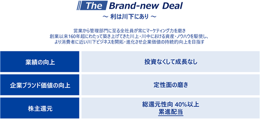
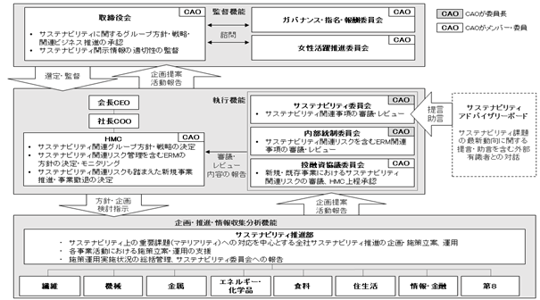
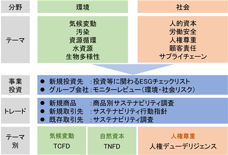
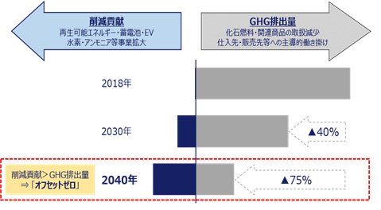
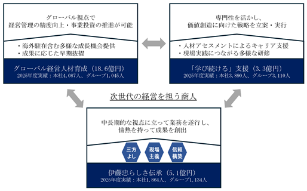

当社グループの経営方針、経営環境及び対処すべき課題等は、次のとおりであります。
なお、文中の将来に関する事項は、当連結会計年度末現在において当社グループが判断したものであります。
来期の世界経済を展望しますと、米国経済はトランプ減税による下支えもあり、個人消費の底堅さは維持されるものの、中東情勢緊迫化に伴う原油高を受けたインフレ圧力の強まりや、金融緩和の遅れ等により下押しされる
見通しです。欧州では、原油や天然ガス等のエネルギー価格の上昇が個人消費を下押しする他、米国の関税強化
による輸出の停滞が続くことから、成長ペースは鈍化する見通しです。中国では、不動産市場の低迷継続が内需を抑制するものの、AI等の新興産業の投資が下支え要因となる見込みです。日本では、原油高を受けたインフレ圧力の強まりは継続するものの、政府の物価高対策や賃金上昇等により個人消費は底堅く推移する見通しです。
ドル・円相場は、日本の長期金利の上昇基調が続くもとで、一段の円安余地は限られる見通しです。原油価格（WTIベース／１バレルあたり）は、中東情勢の先行き不透明感から、80ドル近辺で推移すると予想されます。
・経営方針「The Brand-new Deal ～利は川下にあり～」
当社は、従来の中期経営計画に代えて、長期にわたって羅針盤とすべき経営方針「The Brand-new Deal」を定め
ました。そのうえで、目の前の１年間しっかりと自信を持って約束できる利益計画・財務関連指標や株主還元を
公表しております。
全社員が「利は川下にあり」の考えに基づいてマーケティング力を磨き、世の中のニーズの変化を先取りする
とともに、祖業である川下分野から川上・川中まで幅広い分野で培った資産・ノウハウを活用し、成長投資を加速
させることで事業領域を拡大してまいります。投資を通じた着実な収益成長に加え、企業ブランド価値の向上、
株主還元拡大の３本柱で、企業価値の持続的な向上を目指します。
また、株主還元については、2026年５月に「累進配当」の方針を明確化しております。

＜投資なくして成長なし＞
「業績の向上」に向け、安定した事業基盤を活用した川下起点の投資を加速、事業領域の拡大及び事業基盤の
強化・拡充により更なる成長を目指します。以下を実現することで、より消費者に近い川下ビジネスを開拓・進化
させていきます。
・ディビジョンカンパニー間の横連携によるシナジー極大化
・事業の掛け合わせによるビジネス変革・創出
＜企業ブランド価値の向上＞
積重ねてきた先進的な取組により、外部からの高い評価を通じて「企業ブランド」を築き上げ、財務面の成長
との相乗効果を生み、企業価値を向上。「マーケットインの発想」のもと、市場・社会・生活者の声に耳を傾け
地道な定性面の磨きを継続し、以下の主要施策を通じて、ブランド価値の更なる向上を目指します。
・人的資本の強化
・ステークホルダーとの対話強化
・SDGsへの貢献・取組強化
当社グループのサステナビリティに関する考え方及び取組は、次のとおりです。
なお、文中の将来に関する事項は、当連結会計年度末現在において当社グループが判断したものです。
（１）サステナビリティの考え方
当社グループは、創業の精神である企業理念「三方よし（売り手よし、買い手よし、世間よし）」のもと、
自社の利益だけではなく、投資家や株主の皆様、取引先、社員をはじめ、周囲の様々なステークホルダーの
期待と信頼に応えることで、社会課題の解決に貢献することを目指しております。
2018年４月に環境・社会・ガバナンス（ESG）の視点を取入れ、社会影響と事業影響という２つの観点から
７項目のマテリアリティ（サステナビリティ上の重要課題）を特定しました。マテリアリティに対して、
リスクと機会の両方の観点から対応していくことで、当社の中長期的な企業価値向上に
つながると認識しております。詳細は当社
当社グループは、2024年４月に発表した経営方針「The Brand-new Deal ～利は川下にあり～」において
「業績の向上」「株主還元」と並んで「企業ブランド価値の向上」を実現することを掲げております。
当社グループは、160年を超える発展の過程で変化をチャンスと捉えて、川上から川下まで、原料から小売
までとその影響範囲を拡大しつつ、時代とともに取扱商品の構成や事業領域を転換しながら発展して
きました。そのため、常に既存ビジネスの枠組を超えて新たな価値創造を行うことが、当社グループの
企業ブランドを築き上げ、財務面の成長との相乗効果を生んでおります。当社グループは、強みである生活
消費分野における消費者接点を活用し、全社員で「マーケットインの発想」のもと、市場・社会・生活者の声
に耳を傾けること及び地道な定性面の磨きを継続することで、企業ブランド価値の更なる向上を目指して
おります。
2024年４月に、ハーバード・ビジネス・スクール（以下、「HBS」という。）にて「信頼される企業構築」
の研究を専門とするサンドラ・サッチャー教授が、グループ企業理念「三方よし」のもとで信頼とサステナ
ビリティを確保している企業として当社に注目し、事例研究（ケーススタディ）対象として選定、2025年３月
に正式なHBSのケースとして採用、出版されております。「三方よし」に立脚した当社グループの取組と、
企業価値向上・サステナビリティとの関連性を学術的に説明しているものであり、HBSにおける講義での使用のみならず、経営者、教育機関、投資家等幅広いステークホルダーを対象とする出版物として長期的に活用 されることにより、今後「三方よし」が企業の競争戦略としてグローバルに認知・波及していくことが期待 されております。
（２）サステナビリティの取組
① ガバナンス
当社のサステナビリティ関連のガバナンス体制図は次のとおりです。

(a) 監督機能としての取締役会
当社グループは、サステナビリティ課題への対応を経営の重要課題の一つと認識し、取締役会にてサステナビリティに関するグループ方針、戦略、関連ビジネス推進の承認をするとともに、サステナビリティ開示情報の適切性を監督しております。
マテリアリティに関して、リスクと機会への対応方針や具体的アプローチ、成果指標及び進捗度合等の重要事項のレビューを通し、マテリアリティの妥当性につき取締役会が監督しております。
環境・社会リスクを含むサステナビリティ関連のリスクと機会に対応する事業戦略・投資戦略の執行（戦略
の見直し・事業撤退判断を含む）に関して、当社ではすべての新規投資案件に対し、事前のESGリスク評価
として「投資等に関わるESGチェックリスト」を使用し、サステナビリティ関連のリスクに関する方針、体制
及び取組状況を把握、分析したうえで、重要事項を協議するＨＭＣ（ＨＭＣについては、
検証しております。
また、投資実行後は、サステナビリティ関連のリスクの予防を目的とする事業会社のモニターレビューや、
人権デューデリジェンス、環境汚染等の未然防止を目的とする現地訪問調査等を多面的に実施しております。
バリューチェーン上の管理については、サプライヤーのESG取組状況を確認するサステナビリティ調査を
毎年実施しております。また、気候変動や自然資本へのリスクと機会に関する取組は、TCFD（気候関連財務
情報開示タスクフォース）やTNFD（自然関連財務情報開示タスクフォース）フレームワークに基づく分析・
開示を行っております。
これらの審議内容や取組については、定期的にＣＡＯ（Chief Administrative Officer）から取締役会に
報告され、取締役会が監督しております。
(b) 監督機能における取締役会のスキル・コンピテンシー
当社ＣＡＯはSDGs／ESG分野の専門的経験・知見を有しており、サステナビリティに関する各種施策の
立案・実施を担当するサステナビリティ推進部より月２回程度の頻度で定期報告を受けております。また、
外部有識者を招聘して毎年開催するサステナビリティアドバイザリーボードでの講義、意見交換を通じて、
サステナビリティに関する世の中の動向、当社への期待、対応すべき課題に対する知見を深めております。
当社ＣＡＯは、会社の全般的経営方針及び経営に関する重要事項を協議するＨＭＣのメンバーであると同時に、サステナビリティ委員会の委員長を兼務しており、サステナビリティに関する統括責任者としてサステナビリティ委員会で審議した事項を決定しております。なお、重要事項については、ＣＡＯ決定後に、ＨＭＣで承認しております。当該決定事項は、ＣＡＯからサステナビリティ推進の主たる活動状況とともに適宜
取締役会に報告することで、取締役会の監督にあたってのコンピテンシーを確保していると考えております。
(c) 執行機能としてのサステナビリティ委員会
サステナビリティ関連事項に対応するための各種施策の立案・実施に関する審議を行うサステナビリティ
委員会は、サステナビリティ関連目標の設定や進捗管理、リスクと機会の識別・評価・管理を行って
おります。取締役会は、サステナビリティ関連のリスクと機会に対応する事業戦略・投資戦略の執行（戦略の見直し、事業撤退判断を含む）を監督しております。また、各事業セグメント及び職能部署の経営管理者をESG責任者に任命し、ESG責任者がサステナビリティ関連事項について各種施策・取組の進捗を管理し、
サステナビリティ委員会に報告しております。
2025年度サステナビリティ関連審議、報告実績
|
サステナビリティ 関連会議体 |
開催数 |
主な承認・審議・報告事項 |
|
取締役会 |
４回 |
・サステナビリティ委員会での審議内容及びＣＡＯ決定事項の報告 ・ESG評価関連の報告 ・社会貢献活動の報告 |
|
サステナビリティ 委員会 |
３回 |
承認事項 ・有価証券報告書サステナビリティ関連開示 ・環境方針改訂
報告事項 ・マテリアリティの確認 ・サステナビリティアクションプランレビュー ・伊藤忠グループ サステナビリティ・モニターレビュー結果 ・GHG関連報告（GHG排出量、GHG削減貢献量） ・水・廃棄物関連新目標の立案 ・ISO14001環境マネジメントレビュー |
② 戦略
当社グループは、企業理念や外的環境の変化を踏まえた「サステナビリティ推進基本方針」を定め、
組織的・体系的にサステナビリティに資する取組を推進しております。当社グループのマテリアリティを
サステナビリティアクションプランに落とし込み、経営方針及び経営計画の方針に基づき推進するトレー
ディングや事業投資を通じて、課題解決につなげていきたいと考えております。
(a) 当社グループ方針
当社グループの「サステナビリティ推進基本方針」は次のとおりです。
|
伊藤忠グループ「サステナビリティ推進基本方針」
伊藤忠の創業の精神である企業理念「三方よし」のもと、グローバルに事業を行う伊藤忠グループは、 します。本方針は企業行動指針「ひとりの商人、無数の使命」及び企業行動倫理規範に基づいて策定して います。
１.マテリアリティの特定と社会課題の解決に資するビジネスの推進 国際社会の一員として、自社のみならず社会にとっても持続可能な成長につながるマテリアリティを 策定し、事業活動を通じて企業価値向上を目指します。
２.社会との相互信頼づくり 正確で明瞭な情報開示及び開示情報の拡充に努め、ステークホルダーとの双方向の対話を通じて、 社会からの期待や要請を受けとめ、それらを実践していくことで信頼される企業を目指します。
３.持続可能なサプライチェーン・事業投資マネジメントの強化 地球環境の保全や気候変動の緩和と適応、汚染防止と資源循環、生物多様性及び生態系の保護、人権と します。 事業投資先や取扱商品のサプライチェーン上の資源（大気、水、土地、食糧、鉱物、化石燃料、動植物 等）の有効利用、人権の尊重、及び労働安全衛生への配慮に努めます。取引先に対しては当社グループ のサステナビリティに対する考え方への理解と実践を求め、持続可能なバリューチェーン構築を目指し ます。 各国法制度及び国際規範を尊重し、世界各国・地域の文化、伝統、慣習の理解に努め、公正かつ誠実な 企業活動を展開します。
４.サステナビリティ推進に向けた社員への教育・啓発 「サステナビリティを推進するのは社員一人ひとり」であることから、社員に対し重要課題に関する ションプランを実行します。
上席執行役員 ＣＡＯ |
(b) マテリアリティごとの戦略
当社は、自社のみならず社会にとっても持続可能な成長につながるマテリアリティについて、全社的な意見を反映した対象候補を「事業影響」「社会影響」の面からマッピングして重要度を判定したのち、外部有識者が参加するサステナビリティアドバイザリーボードで「経営への影響」と「ステークホルダーの意見・期待」の両面から「マテリアリティマトリックス」を作成し、マテリアリティを７項目に特定しました。マテリアリティについては、当社の事業範囲や全社リスク管理（ERM）下における主要リスクのレビュー結果、アドバイザリーボードや株主との面談を通じて寄せられる関心事項とも照らし合わせて、引続き有効であるか毎年見直しており、サステナビリティ委員会で審議、ＣＡＯが決定したのち、取締役会に報告しております。
マテリアリティに関する事業を通じた取組として、各事業セグメントや職能組織で事業分野ごとのリスクと機会等を抽出したうえで、短期から中長期的な目標達成に向けたサステナビリティアクションプランを定めております。サステナビリティアクションプランでは、取組むべき課題、対象事業分野、具体的アプローチ、
成果指標及び進捗状況を管理しております。毎年成果指標に基づくレビューを８つのカンパニー及び職能組織
ごとに実施し、サステナビリティ委員会に進捗状況を報告します。このようなPDCAサイクルを回し開示する
ことにより、確実なマテリアリティごとの戦略推進を目指しております。
マテリアリティごとのリスクと機会
|
マテリアリティ |
リスク |
機会 |
|
技術革新による商いの進化 |
・IoT、AI等、新技術の台頭に伴う 既存ビジネスモデルの陳腐化 ・先進国での人手不足や、効率化が 遅れている事業での優秀な人材の 流出 等 |
・新市場の創出や、革新性のある サービスの提供 ・新技術の活用による人的資源や 物流の最適化、働き方改革推進に よる競争力強化 等 |
|
気候変動への取組 （脱炭素社会への寄与） |
移行リスク ・温室効果ガス排出に対する事業 規制等による化石燃料需要の 減少、関連資産の価値低下、炭素 税や再生可能エネルギー使用に よるコスト増加 物理的リスク ・生態系保護に資するためのコスト増加、異常気象（干ばつ、洪水、台風、ハリケーン等）発生増加による事業被害 等 |
・気候変動の緩和に寄与する、再生 可能エネルギー等の事業機会の 増加 ・異常気象に適応できる供給体制 強化等による顧客維持・獲得 等 |
|
働きがいのある職場環境の 整備 |
・団体交渉権や団結権の阻害により 当社従業員の不満が蓄積。 その結果、労働生産性の低下、 訴訟リスクの発生 ・成果に応じた評価・報酬を実現 しない場合、優秀な人材の流出に よるビジネスチャンスの逸失 ・過剰労働による健康被害や人権 侵害に伴う健康関連費用の増加、 レピュテーションリスクの発生 等 |
・働きがいのある職場環境の整備や スキル向上の機会を提供すること による労働生産性の向上、 健康力・モチベーション向上 ・多様な人材が活躍することが できる環境を整えることによる、 優秀な人材の確保、環境変化や ビジネスチャンスへの対応力強化 |
|
人権の尊重・配慮 |
・バリューチェーン上の労働者及び 関係者に係る人権問題発生に伴う 事業遅延や継続リスク ・当社が提供する社会インフラ サービスの不備による事業 不安定化・信用力低下 等 |
・地域社会との共生による事業の 安定化や優秀な人材確保 ・サプライチェーン人権への配慮、 労働環境の改善に伴う生産性向上 ・安全かつ安定的な商品供給体制の 構築 等 |
|
健康で豊かな生活への貢献 |
・消費者やサービス利用者の安全や 健康問題発生時の信用力低下 ・政策変更に基づく、市場や社会 保障制度の不安定化による事業 影響 等 |
・食の安全・安心や健康増進の需要 増加 ・個人消費の拡大や次世代インターネットの普及に伴う情報・金融・物流サービスの拡大 等 |
|
安定的な調達・供給 |
・環境問題の発生及び地域社会との 関係悪化に伴う反対運動の発生に よる影響 ・現地エコシステムの変化による 持続可能な調達・供給力の低下 ・地政学や為替変動等に起因する インフレによる調達・供給力の 低下 等 |
・新興国の人口増及び生活水準向上 による資源需要の増加 ・生態系に配慮した持続可能な資源や素材の安定供給による顧客の 信頼獲得や新規事業の創出 等 |
|
確固たるガバナンス体制の 堅持 |
・コーポレート・ガバナンス、内部 統制の機能不全、法令違反に伴う 事業継続リスク、予期せぬ損失の 発生 等 |
・強固なガバナンス体制の確立に よる意思決定の透明性の向上、 変化への適切な対応、安定的な 成長基盤の確立 等 |
(c) 具体的アプローチ
当社は、2024年４月３日の取締役会において「The Brand-new Deal ～利は川下にあり～」を経営方針と
定め、企業ブランド価値の向上を目指して、それまでの３ヵ年の中期経営計画から引継ぐ「SDGsへの貢献・
取組強化」に本業を通じて取組んでおります。本取締役会決議を踏まえ、2026年５月のサステナビリティ
委員会で、各マテリアリティに関する具体的施策及び目標に対する進捗状況の審議・レビューを
行うとともに、2026年度のサステナビリティアクションプランを決定し、各事業セグメントにおいてこれらの
施策を継続的に実行しております。詳細は2026年９月発行予定の当社
各事業セグメントにおける2025年度の具体的成果の一例は次のとおりです。
|
事業セグメント |
2025年度の具体的成果 |
|
繊維 |
・生成AIを積極的に活用し、業務時間の削減、商品企画の精度向上、接客改善、在庫 最適化等を一段と推進した結果、小売系事業会社７社合計のROAが前年度比1.9％ 改善 ・繊維由来の再生ポリエステル「RENU」等、サステナブル素材の普及促進及び繊維 製品を再資源化する仕組みを構築し、横展開を推進 |
|
機械 |
・北米における再生可能エネルギー資産を投資対象とするファンドを設立し、累計 ３件406MWhの風力発電等へ投資を実行 ・アンモニア焚き大型バラ積み船のエンジン開発を完了 |
|
金属 |
・デンマークEverfuel A／Sと共同でグリーン水素バリューチェーン構築を推進 ・鉄鋼業界のグリーン化に貢献する低炭素還元鉄サプライチェーン構築を推進 |
|
エネルギー・化学品 |
・家庭用蓄電池の販売拡大及び大型蓄電池事業を本格展開（計1.1GWh超） ・航空業界へ持続可能な燃料SAFを供給継続 |
|
食料 |
・持続可能な調達に寄与する認証付き商品（パーム油、コーヒー豆等）の推進及び フードロス削減に向けた規格外バナナの取扱増 ・複数の小売業者に対して業務改善に向けた需要予測・物流効率サービスを提供 |
|
住生活 |
・林産物の取扱において、認証材または高度な管理が確認できる林産物の比率で100％を達成 ・天然ゴム加工事業でトレーサビリティ、サステナビリティが確保された原料を調達 |
|
情報・金融 |
・中古携帯端末における取扱品目を拡大、調達ソース及び流通チャネル拡充 ・抗がん剤治療に伴う脱毛の抑制につながる頭皮冷却システムの導入を拡大 |
|
第８ |
・ファミリーマート約16,400店中約11,000店まで大型サイネージ導入を進め、来店客へ新しい店舗体験を提供、データ連携によるデジタルマーケティングを高度化 ・店長業務サポートを担うAIモデルを約13,000店舗に導入し運営業務を効率化 |
|
その他 |
・奄美大島／宇検村で日本初マングローブ由来のブルーカーボン・クレジットを創出 |
③ リスク管理
(a) 全社的リスクマネジメントシステム
当社は、主要リスクの責任部署による定常的なリスク管理（第１線）、取締役会による監督のもと、
ＨＭＣとリスクマネジメントに関連する各委員会による全社的なリスク管理（第２線）、そして内部監査部門
による独立した視点での推進状況や体制に関する監督（第３線）というリスク管理体制をおくことで、全社的
なリスク管理を行っております。これは、COSO-ERMフレームワークが推奨する３ラインモデルに沿った体制と
なっております。定常的なリスク管理については、迅速な意思決定を実現するため各事業セグメントが委譲
された権限の範囲内で管理し、リスク責任部署が状況をモニタリングしております。
このように当社グループでは、サステナビリティ関連をはじめとする様々なリスクと機会に対処するため、
各種の社内委員会や責任部署を設置するとともに、各種管理規則、投資基準、リスク・取引限度額の設定や
報告・監視体制の整備等、必要なリスク管理体制及び管理手法を整備し、リスクと機会を総括的かつ個別的に
管理しております。
半期に一度、主要リスクの責任部署が連結リスク管理のアクションプランのレビューを行い、主要リスク別に管理状況を内部統制委員会へ報告することで、管理体制の有効性を定期的にレビューしております。更に、このレビュー結果は取締役会にも報告されております。
詳細は当社
(b) 事業運営レベルのリスク管理体制
事業運営レベルのリスク管理としては、各カンパニーにおいてカンパニーの長であるカンパニー
プレジデントの諮問機関としてＤＭＣ（Division Company Management Committeeの略）が、各カンパニーに
おける経営方針及び経営に大きな影響を及ぼす投資・融資・保証・事業等における重要案件を審議して
おります。委譲された権限を超えるリスクを負担する場合は、重要度に応じ、各種委員会を経てＨＭＣ及び
（または）取締役会へ付議されます。
(c) サステナビリティ関連のリスクと機会の評価
当社グループは、リスク管理を経営の重要課題と認識し、COSO-ERMフレームワークの考え方を参考に、当社
グループにおけるリスクマネジメントの基本方針を定め、必要なリスク管理体制及び手法を整備しており
ます。将来の当社グループの財政状態及び業績に重要な影響を及ぼす可能性があるものを重要なリスクと
考え、気候変動、サプライチェーン、人権等のサステナビリティに係る規制等の動向及び、世界各地の事業に与えるサステナビリティ関連のリスクと機会に関する情報収集を定期的に行っております。それらの情報を
踏まえ、リスクの発生頻度及び深刻度、操業／活動範囲等の評価指標から、以下の一覧にある環境・社会面の
テーマやガバナンス面について、営業部門や一部職能部でリスクと機会を定量評価し、社会へのインパクトと
当社グループへのインパクトの両面から影響度合いを可視化し、特に重要なリスクや機会を把握しており
ます。
主な環境・社会リスクに関する社内のリスク管理制度

(d) サステナビリティ関連のリスクと機会の管理
当社グループでは、全社的リスクマネジメントシステムのガバナンスのもと、次のような事業運営に伴う
サステナビリティ関連のリスクと機会の管理を行っております。
事業投資では新規投資時にはESGチェックリストによる確認をしたのち、各事業セグメントのＤＭＣに
おいて、経営方針及び経営に影響を及ぼす投資・融資・保証・事業等が審議され、カンパニープレジデントが
それらを決定しております。なお、当該決定事項は、事業段階ごとの状況に応じて管理し、投資後はグループ
会社に対するモニターレビューを毎年実施しております。
トレードで新規商品群を取扱う場合は、著しい環境・社会面のリスクをLCA（ライフサイクルアセス
メント）により確認し、適切な法規制対応ができる体制とモニタリング制度を整えております。新規取引先に
は当社のサステナビリティ行動指針を通知し、当社のESGに対する考え方に理解を求めること、重要な取引先
には毎年サステナビリティ調査にて取引先のESG対応状況を確認し、懸念点がある場合は対面や現地訪問に
より詳細を確認し必要な措置を講じております。
またテーマ別に、気候変動はTCFD、自然資本はTNFDのフレームワークに沿って、環境変化による事業への
影響と対応策の有効性を分析することや、人権侵害に加担していないかサプライヤーやグループ会社に対して
実地調査を行う人権デューデリジェンスにも取組んでおります。
④ 指標及び目標
サステナビリティアクションプランの取組むべき課題、アプローチ、成果指標及び進捗度合の詳細は2026年
９月発行予定の
（３）気候変動対応
当社グループは気候変動を最も緊急性が高い地球環境問題の一つと認識しております。
当社グループは、パリ協定や日本国が決定する貢献（NDC）を支持し、気候変動による事業環境の変化への
適応に努めるとともに、これを更なる成長機会と捉えております。当社グループは、2030年・2040年・2050年
までの温室効果ガス（GHG）排出量削減達成のため、バリューチェーン上の関係者と協力し、省エネや再生
可能エネルギーの利用、一般炭権益からの撤退をはじめとする資産入替、環境に配慮した商品やサービスの
提供等により排出量を可能な限り削減し、また社会全体の排出量を削減する削減貢献ビジネスを
積極的に推進することで、企業価値向上につなげていきます。
当社は、気候関連財務情報開示の重要性に応えるべく、2019年５月、TCFDの提言への賛同を表明して以降、
TCFD提言に基づく情報開示に努めております。
詳細は当社
① ガバナンス
気候変動に係るリスクと機会への対応方針やGHG排出量の削減目標・取組、気候変動リスクと機会を考慮
した年度予算・事業計画等の重要事項につき、サステナビリティ関連のリスクと機会の一つとして前述の
サステナビリティ全般のガバナンスにおいて統合的に管理・監督しております。
② 戦略
当社の事業は、気候変動の移行リスク及び物理的リスクの影響を短期・中期・長期の様々な時間軸で受けて
おります。そのため当社は、各事業案件の推進プロセス及び気候変動を含む環境・社会リスクの管理プロセス
の中で、事業や戦略、バリューチェーン等に重大な財務的影響を与える可能性のあるリスクと機会を特定・
評価・管理しております。
(a) 気候変動関連のリスクと機会
|
気候関連の リスクと機会 |
気候関連のリスクと機会が 組織の事業、戦略、 財務計画に及ぼす影響 |
影響を |
影響を受ける |
影響を受ける 事業・業種の例 |
|
|
移行 リスクと 機会 |
政策と 法制度 |
・世界各国のGHG排出計画の厳格化・GHG排出に対する事業規制等による化石燃料 需要の減少 ・カーボンプライシング による事業コストの増大 |
中期 長期 |
上流・ 当社グループ |
発電事業、 化石燃料事業、 鉄鉱石事業、 自動車事業、 化学品事業 |
|
技術革新 |
気候変動の緩和に寄与する の増加 |
短期 中期 長期 |
当社グループ |
再生可能エネルギー ・蓄電池関連事業、 鉄鉱石事業 |
|
|
市場状況の変化 |
政策と法的リスク及びクリーンテック等のテクノロジーの影響を受ける製品・サービスの需要の増加と減少 |
短期 中期 長期 |
上流・ 当社グループ |
化石燃料事業、 自動車事業、 再生可能エネルギー ・蓄電池関連事業、 新素材事業、 CCUS・排出権関連 事業 |
|
|
気候関連の リスクと機会 |
気候関連のリスクと機会が 組織の事業、戦略、 財務計画に及ぼす影響 |
影響を |
影響を受ける |
影響を受ける 事業・業種の例 |
|
|
物理的 |
急性的な物理的 リスク・ |
異常気象（干ばつ、洪水、 増加による事業被害等 |
短期 |
上流・ 当社グループ・ |
食料事業、 森林関連事業、 鉱業 |
|
異常気象に適応できる供給 体制強化等による顧客維持・ 獲得等 |
短期 |
上流・ |
食料事業、 森林関連事業 |
||
|
慢性的な物理的 リスク・機会 |
気温上昇と気候変動に付随 する干ばつ等が農業・林業の 生産量に与える影響 |
中期 長期 |
上流・ |
食料事業、 森林関連事業 |
|
（注）短期：～１年、中期：～３年、長期：４年～
(b) シナリオ分析
当社事業を、GHG排出量等気候影響度と財務影響度をもとに分類し、双方の影響度が大きい事業を分析対象
としております。その結果、政策と法的リスク等の移行リスク影響の大きい事業として、「発電事業」
「エネルギー事業」「石炭関連事業」「鉄鉱石事業」「自動車事業」「化学品事業」を、また気候変動の
物理的リスク影響の大きい事業として、「Dole事業」「飼料・穀物トレード事業」「パルプ事業」を、
シナリオ分析を行う対象事業に選定しました。上述９事業は、TCFDが指定した気候変動の影響を潜在的に
大きく受ける４つの非金融セクター（エネルギー、運輸、材料及び建物、農業・食品・木材製品）に含まれる
ものです。
(c) 既存戦略への影響と事業の移行計画
シナリオ分析を行う中で、現状の事業戦略や事業地域の転換といった気候変動対策を取らない場合の財務的
な負の影響が大きいリスクを把握しました。また、経営方針「The Brand-new Deal ～利は川下にあり～」に
て推進する「SDGsへの貢献・取組強化」のもと、具体的な事業の移行計画、財務計画（資産入替を含む）の
策定に既に着手しております。シナリオ分析の対象以外の事業も含め、気候変動対策に資する取組として、
次のようなビジネスを推進しております。
|
分野 |
概要 |
|
環境配慮型繊維素材 |
・サステナブル素材の拡充による循環型経済への貢献 |
|
水・廃棄物処理 |
・有力パートナーとの協業を通じ、欧州・中近東を中心に事業展開 |
|
再生可能エネルギー |
・北米・欧州・アジア中心に風力・太陽光・地熱等、発電事業を推進 ン電力サービス・環境価値取引を推進 |
|
金属リサイクル |
・リサイクル事業者の全国ネットワーク活用や、廃棄物処理の最適管理サービス提供 を通じ、金属スクラップ他幅広くリサイクル事業を展開 |
|
還元鉄 |
・鉄鋼業界のグリーン化に貢献する低炭素還元鉄サプライチェーン構築を推進 |
|
CCUS（CO2回収・ 利用・貯留） |
・豪州MCi Carbon Pty Ltdの有するCO2固定化技術の商業化を目指し、国内外の取引先企業と協業 ・国立研究開発法人新エネルギー・産業技術総合開発機構（NEDO）の委託事業に 参加し、液化CO2輸送技術の研究開発・実証事業も実施 |
|
持続可能な航空燃料 ・ディーゼル燃料 |
・日本初となる航空会社向け持続可能な航空燃料（SAF）及び商用車向けリニューア ブルディーゼル（RD）の販売・供給を実現 |
|
分野 |
概要 |
|
水素・アンモニア |
・デンマークEverfuel A／Sと共同でグリーン水素バリューチェーン構築を推進 ・クリーンアンモニアのバリューチェーン構築に向け、アンモニア燃料船開発及び 保有運航モデルの創出、舶用燃料供給（バンカリング）事業、発電燃料代替として の利活用、製造販売事業等を推進 |
|
プラスチックリサイクル |
・リサイクル技術を持つ有力パートナーとプラスチックリサイクル事業展開 |
|
サステナブル コーヒー豆・植物油 |
・児童労働・環境破壊を排除したサステナブル製品・第三者認証品を安定供給 構築 |
|
青果物生産・加工 廃棄物削減 |
・Dole商品の生産・流通・加工工程における格落ち品・残渣の再利用を促進 |
|
サステナブル天然 ゴム |
・持続可能な天然ゴムのための国際コンソーシアム「GPSNR」に設立メンバーとして 参画 ・天然ゴムの持続可能性向上を目指す取組「PROJECT TREE」をバリューチェーン全体 に展開 |
|
中古携帯端末流通 |
・スマートフォン買替による環境負荷増大等の市場動向を捉え、中古携帯端末流通 事業を運営 |
|
IT機器リサイクル |
・米国最大手IT機器リサイクルパートナーと提携し、IT機器リサイクル事業へ参入 |
|
CVS事業（ファミ リーマート） |
・サプライチェーン改革による業務効率化、食品ロス削減 |
③ リスク管理
気候変動リスクは、サステナビリティ関連のリスクと機会の一つとして前述のサステナビリティ全般の
リスク管理において統合的に管理しております。なお、気候変動のリスク管理は、次のとおり、事業の段階
ごとの評価手法に組込まれております。
事業の段階ごとの評価手法
|
事業の段階 |
評価手法 |
|
事業開始 |
・新規投資案件の気候変動リスクを含む環境・社会リスク評価 ・炭素税コスト等をシャドープライシングで算定し、ストレステストを実施 （インターナルカーボンプライシング） |
|
事業運営 |
・取扱商品の環境リスク評価（サプライチェーン全体でLCA評価） ・グループ会社の環境実態調査（１年に２、３社） ・サプライチェーン・サステナビリティ調査（取引先） ・ISO14001に基づく内部環境監査（当社、対象グループ会社３社） ・Scope１／２／３集計と経年評価、インターナルカーボンプライシングインパクト 評価（例：発電事業（米国）の場合205米ドル／t-CO2） |
|
事業戦略の見直し |
事業戦略、資産入替の検討 |
各事業段階の評価手法でリスクまたは機会が特定された場合、リスクと機会の事業への影響を評価しております。それにはシナリオ分析・ストレステスト等の定量評価、投資方針・GHG排出量削減目標への準拠性評価のような定性評価が含まれます。定量評価された気候変動のリスクと機会の情報には、気候変動以外のリスクと機会の定量情報が加算され、収益への貢献度合を分析しております。
④ 指標及び目標
当社グループは、気候変動リスクと機会への対応の一環として、GHG排出量とクリーンテックビジネスに
関し、以下の指標及び目標を設定しております。指標及び目標を定める際には、パリ協定や日本国NDC、国際的な信頼性が高く多岐にわたる事業領域をカバーできるIEA（国際エネルギー機関）の資料等を参照して
おります。
＜GHG排出量削減目標＞
指標（集計範囲）：
Scope１／２／３（当社及び子会社）、化石燃料事業・権益（当社及び子会社・関連会社・一般投資）
目標：
・2050年までにGHG排出量「実質ゼロ」を実現。
・2040年までに2018年比75％削減を実現し、GHG排出量削減に貢献するビジネスの積極推進を通じ
「オフセットゼロ（注）」を目指す。
（注）オフセットゼロ：削減貢献量（既存の製品やサービスをよりGHG排出量が少ない製品やサービスに
置き換えた場合に削減・抑制可能なバリューチェーン上のGHG排出量）が当社GHG排出量を上回る
状態。
・2030年までに2018年比40％削減を実現。

⑤ GHG排出量データ
（単位：千t-CO2e）
|
|
前連結会計年度 |
当連結会計年度 |
|
Scope１ |
|
|
|
Scope２ |
|
|
・千t-CO2e単位で表示している数値については、千t-CO2e未満の端数を四捨五入して表示しております。
・当連結会計年度のScope１及びScope２の数値は第三者保証を受ける予定です。集計範囲、算出方法及び 第三者保証の詳細につきましては、
・
（４）自然資本・生物多様性への対応（TNFDに基づく開示）
当社は自然資本・生物多様性を含む地球環境問題を経営の最重要課題の一つとして捉えております。当社
グループは川上から川下まで事業投資やトレードをグローバルに展開しており、人々に便益をもたらす
植物、動物、空気、水、土壌、鉱物等の自然資本の恵みに大きく依存し、またこれらに負の影響を与える
可能性があります。このため、伊藤忠グループ環境方針に示す生物多様性の保全を推進すべく、生物多様性
方針を定め、持続可能な社会の実現に貢献していきます。
また、TNFDの議論を加速させるためにTNFDフォーラムへ参画しており、2024年10月にはTNFD提言に基づく
情報開示への意思を宣言するTNFD Adoptersにも登録し、TNFD提言に基づく情報開示に努めております。
詳細は2026年９月発行予定の当社「ESGレポート 2026」自然資本・生物多様性（TNFD 提言に基づく情報
開示）をご参照ください。
① ガバナンス
自然関連リスクと機会への対応方針やリスク・機会を考慮した年度予算・事業計画等の重要事項につき、
前述のサステナビリティ全般のガバナンスの仕組みの中で管理・監督しております。（（２）サステナ
ビリティの取組①ガバナンスをご参照ください。）
② 戦略
TNFDフレームワークを参考に、当社グループの全事業について潜在的な自然資本への依存と影響を机上分析のうえで、LEAPアプローチ（注）によるトライアル分析を実施しました。TNFDが推奨する手法が当社でも活用可能であると確認されたため、自然資本への依存度が比較的高い天然ゴム事業（天然ゴムの調達とゴム加工）と、影響度が比較的高い不動産事業（建材調達と不動産開発）を対象にLEAPアプローチによる分析を実施し、自然資本への依存・影響の評価と、シナリオ分析を用いた同事業のリスクと機会の特定を行いました。その
結果、天然ゴム事業については自然の持つ浄化や減災機能に強く依存し、土地利用の転換や廃棄物の排出等が自然に影響を与える可能性があります。また、土壌劣化による天然ゴムの収量低下や水質汚染による品質低下等がリスクに該当し、認証材の販売量増加等が機会になりうることがわかりました。不動産事業については
降雨パターン等に強く依存し、建設作業中の騒音や粉じん等が自然環境に影響を与える可能性があります。
また、洪水や土砂災害による工期の遅延や物件の運用が困難になること等がリスクに該当し、災害レジリ
エンス強化による安定的な施設稼働が機会になりうることがわかりました。一定以上の重要度が認められる
リスクについて、いずれの事業においても既に十分な対応策を行っていることが確認されております。なお、これらのリスク・機会の評価を行う際のシナリオ分析は、2030年を想定して実施されました。
加えて、木材・パーム油・カカオ豆・コーヒー豆という自然への依存度と影響度が高いコモディティに
ついては、調達段階を対象とした個別分析を行いました。調達地域の地理的な特徴等も踏まえて、自然への
依存と影響及びこれらが発現した場合のリスクを特定し、対応策を確認したところ、その商品特性に合わせたリスク低減策が講じられていることがわかりました。
（注）TNFDが開発したLocate（発見する）、Evaluate（診断する）、Assess（評価する）、Prepare（準備
する）という４つのステップで構成された対象事業の自然関連課題を明確にする分析手法。
③ リスクとインパクトの管理
自然関連リスクは、サステナビリティ関連のリスクと機会の一つとして前述の（２）サステナビリティの
取組③リスク管理において統合的に管理しております。なお、自然関連のリスク管理は、事業の段階ごとの
評価手法に組込まれております。
④ 指標及び目標
当社では、TNFDが開示を推奨しているコアグローバル指標及び、分析結果を踏まえて検討した当社固有の
指標に対応するデータを収集しております。今後は目標の設定についても検討していきます。
（５）人的資本経営・多様性
当社グループは、企業理念である「三方よし」の精神を継承し、企業行動指針である「ひとりの商人、無数
の使命」を体現する人材の確保・育成に努めております。その実現には、人種、性、宗教、国籍、年齢等に
かかわらず、従業員一人ひとりの能力を最大限に引出す人材戦略の実行と環境の整備が不可欠であり、当社の
朝型勤務・健康経営等の働き方改革や人事政策の事例を当社グループで共有したうえで、グループ各社の
ビジネスに合わせた独自の人材戦略を展開しております。また、グループ各社の採用、人材育成、労務管理等における課題に対し、きめ細やかな支援を行う等、当社グループが一体となって企業価値の向上に努めており
ます。
① ガバナンス
当社グループの企業理念である「三方よし」を実現するため、人材戦略を経営戦略の一つとして位置付けて
おります。人的資本に関する重要な方針及び施策は、人事・総務部の立案、ＣＡＯ、ＣＳＯ（Chief Strategy
Officer）、業務部の審査を経て、ＨＭＣで決定し、ＣＡＯより取締役会に適時または定期的に報告しております。また、「人材多様化」に関する社会的な要請が一層高まる中、喫緊の課題である「女性の活躍支援」を加速すべく、2021年10月に設立した取締役会の諮問委員会である女性活躍推進委員会における審議及び答申を通じて、人材戦略に関する重要施策、目標設定及びその進捗を監督しております。なお、女性活躍推進委員会
は、社外取締役を委員長とし、委員総数の半数以上を社外役員で構成しております。
② 戦略
当社グループの育成方針・社内環境整備方針・具体的アプローチは、次のとおりです。
＜商人の育成方針＞
当社は、1999年度より人材育成費用を持続的な企業価値の向上のための「人的資本投資（E&D費）」と位置
付け、毎年全社でレビューし、グローバル経営人材育成、「伊藤忠らしさ」の伝承、「学び続ける」支援を
柱に人材育成を推進しております。

現場（OJT）を育成の中心とし、20代のうちに海外駐在・出向を含む多様な経験を提供し、成長を促進する
ことを重視しており、キャリア棚卸の機会を通じて従業員の強み・弱みを把握し、現場での実践と豊富な研修
（Off-JT）の両輪で成長を支援しております。これらの取組を通じ、社会環境の変化や顧客ニーズを捉えた
「無数の使命」を果たす「商人」を育成し、当社グループの企業理念である「三方よし」を実現しており
ます。重点的施策は、次のとおりです。
(a) 採用市場での優位性を活かした優秀な人材の確保
優秀な人材の採用は、当社競争力の源泉です。積み重ねてきた先進的な取組により、数多くの高い外部評価
を通じて採用市場における企業ブランドを築き上げ、就職人気ランキング等に基づく「学生から選ばれる企業
No.１」の地位堅持により、優秀な人材を継続して確保していきます。
(b) 経営人材の多様化
経営人材の多様化は、生活消費関連ビジネスに注力する当社にとって非常に重要な要素になるため、「2030年までに、全役員（執行役員を含む）に占める女性比率を30％」とする数値目標を定めております。2024年度
に導入した女性執行役員特例措置制度をはじめ、性別関係なく従業員が幅広い職務領域において中核的な
役割を担う職場環境の整備を進めております。
(c) グローバル経営人材育成
「マーケットインの発想」に基づき現地に根差したビジネスを推進するため、優秀な海外現地従業員の登用と、本社従業員の海外派遣を両輪として推進しております。本社新卒採用の総合職は、原則入社８年以内に
海外を経験し、駐在や実習、語学研修を通じて現地の語学・文化や商慣習を習得しております。更には
グループ会社の経営管理を担う人材育成として、川下起点の投資を加速し、ハンズオンで事業領域拡大や事業
基盤の更なる強化・拡充に向けたプログラムを構築しております。
(d) 「伊藤忠らしさ」の伝承
当社では、企業理念「三方よし」の精神を次世代に伝承するために、創業地訪問、企業理念教育、役員等に
よる経営や投資に関するノウハウ共有機会の提供等、毎年様々な取組を行っております。
(e) 「学び続ける」支援
当社は、全従業員を「学び続ける」対象とし、OJTでは身に付けることが難しいビジネスモデルの進化に
資する組織戦略に紐づく新たな知識を、豊富な研修メニューの選択を通じて習得する機会を設けております。
また、組織戦略上必要となる知識・スキルの習得に従業員が自発的に取組めるように、個人業績評価における目標として「学び続ける」項目を設定しております。特に、DXの知識獲得においては、習得度合いによる階層別のプログラムや、全従業員を対象とした生成AIのeラーニングを構築する等、DXを目的化せず、当社の業容
変革を実現・推進できる人材を体系的に育成しております。
(f) 主体的キャリア形成支援
当社は、従業員一人ひとりが「キャリアを自ら考え、成長すること」を後押しし、働きがいを高めていく
ことが、組織全体の持続的な成長につながると考えております。この考え方のもと、会社としての育成方針を示しつつ、従業員本人の志向、適性、家庭等の事情に応じた多様なキャリア形成の機会と働き方の選択肢を
整備しております。
具体的には、定期的な所属長との面談や人材アセスメントを通じて、従業員が自身のキャリアを棚卸しし、今後のキャリアについて考える機会を設けております。また、本社新卒採用の総合職新入社員に対しては、
若手育成方針に基づく入社後８年間の「個人別キャリアプランイメージ」を提示するとともに、経営層から
育成方針を共有する機会を提供しております。
併せて、希望部署への異動を可能とする「チャレンジキャリア制度」（社内公募）や、組織横断的な案件に参加できる「バーチャルオフィス」を通じて、従業員の主体的なキャリア形成を職掌移動制度、在宅勤務・
朝型フレックスタイム制度、育児や介護等の事情に配慮した一時的な転勤免除、キャリアカウンセリング室における相談体制等、多様な事情に応じた支援策を講じることで、従業員に寄り添う当社らしい施策を実施して
おります。
＜従業員の貢献意欲向上・更なる労働生産性の追求＞
成果に応じたメリハリのある評価・報酬、早期抜擢やチャレンジングな経験の機会の創出により、全従業員
が能力を最大限に発揮できる「厳しくとも働きがいのある会社」の実現を目指しております。
朝型勤務・健康経営等の働き方改革の先進的な取組の積み重ねに加え、2024年度には、約10年ぶりとなる
大規模な人事制度の改訂を行いました。年功的な要素を廃し、30歳前後で事業会社にてマネジメント経験を
積むことを可能とする等、優秀な従業員を早期に抜擢する仕組みを導入しております。また、若手・中堅を
中心とした給与水準の引上げや個人の頑張りに応じた処遇のメリハリ強化を通じて全従業員平均の年収ベースで2023年度比約２％の年収増を実現しております。更に2025年度より全従業員を対象に約２～３％の固定給
増額に加え、従業員持株会を活用した株式報奨制度の拡充等により約10％の年収増となる改訂を実現しており
ます。
＜社内環境整備方針＞
「健康力向上」こそが、企業行動指針である「ひとりの商人、無数の使命」を果たす人材力強化の
礎であるという考えに基づき、当社は「伊藤忠健康憲章」の制定、がんと仕事の両立支援等をはじめとした
健康・安全に対する万全な体制を構築しております。また、従業員の健康維持・増進を図るため、睡眠を含む
健康課題への対応や、労働安全衛生に関する情報提供を通じて、従業員が安心して働くことができる職場環境の整備を推進しております。今後も、従業員一人ひとりの健康を第一に、当社グループ全体で安全で働きがい
のある職場環境の実現を目指していきます。
③ リスク管理
当社は、価値創造の原動力である従業員一人ひとりの能力を最大限に引出すための基盤整備に努めており、迅速な意思決定を実現する観点から各事業セグメントに権限を委譲し、事業運営に伴う人材に関するリスクと機会の管理を行っております。経営戦略に基づいた人材戦略のもと、各カンパニープレジデントが人材確保や適材適所等を推進しております。また、定期的にエンゲージメントサーベイを実施し、その結果を各事業セグメントに報告することにより、従業員の働きがい等の人的資本に関する重要な状況をモニタリングしており
ます。当社グループ各社に対しては、事業セグメントを通じて労務管理リスク及び人材リスクの把握を行い、課題に応じたきめ細やかな支援を実施しております。更に、コンプライアンス意識の向上及び事案の未然防止を目的として、実際に発生したコンプライアンス事案を教材として含めた「コンプライアンス巡回研修」を
当社及び国内グループ会社の役職員に対して実施しております。なお、これら人的資本経営・多様性に関するリスクと機会の識別、評価、管理及びモニタリングは、「（２） サステナビリティの取組 ③リスク管理」
に記載の全社的なリスク管理の枠組に沿って運用しております。
④ 指標及び目標
(a) 人材育成・働き方
|
指標 |
前連結会計年度 |
当連結会計年度 |
目標 |
集計対象 |
|
|
|
5.7 |
|
- |
提出会社 |
|
|
|
100 |
|
- |
提出会社 |
|
|
|
1.6 |
|
- |
提出会社 |
|
|
|
10.7 |
|
- |
提出会社 |
|
|
|
96 |
|
|
提出会社 |
|
|
|
69.1 |
|
- |
提出会社 |
|
|
|
26 |
|
- |
提出会社 |
|
|
|
39 |
|
- |
提出会社 |
|
|
|
21 |
|
|
提出会社 |
|
|
|
56,831 |
|
- |
提出会社 |
|
|
|
87 |
|
- |
提出会社 |
|
|
|
31.0 |
|
- |
提出会社 |
|
|
|
24.5 |
|
- |
提出会社 |
|
|
|
・グローバル・経営人材育成 |
16.3億円 |
18.6億円 |
- |
提出会社 |
|
|
・「伊藤忠らしさ」の伝承 |
4.7億円 |
5.1億円 |
- |
提出会社 |
|
|
・「学び続ける」支援 |
3.4億円 |
3.3億円 |
- |
提出会社 |
|
一人あたり人材育成投資額 （注）４ |
60.6 |
|
- |
提出会社 |
|
|
企業理念「三方よし」を深く理解するための創業地訪問参加者数 （注）５ |
3,943名 |
4,319名 |
- |
連結会社 |
|
（注）１ 働き方改革を開始した2010年度を１とした場合の労働生産性推移（連結純利益÷単体従業員数）
です。
２ 女性役員比率は、会社法上の役員に加え執行役員を含みます。
３ 人材育成を目的とする統合型独身寮に関連する費用を一部含みます。
４ 期末時点での休職者を人員数より除きます。
５ 2004年度より導入した創業地訪問の参加者数の直近連結会計年度までの累計です。
(b) 社内環境整備方針
|
指標 |
前連結会計年度 |
当連結会計年度 |
集計対象 |
|
|
97 |
|
提出会社 |
|
|
9 |
|
提出会社 |
|
|
0 |
|
提出会社 |
|
グループコンプライアンス意識調査の 回答率（注） |
98％ |
99％ |
連結会社 |
（注）独自で調査をしている上場子会社を除く国内外子会社及びその事業会社の従業員61,317名が対象です。
当社グループは、その広範にわたる事業の性質上、市場リスク・信用リスク・投資リスクをはじめ様々なリスクにさらされております。これらのリスクは、予測不可能な不確実性を含んでおり、将来の当社グループの財政状態及び業績に重要な影響を及ぼす可能性があります。当社グループは、これらのリスクに対処するため、必要な
リスク管理体制及び管理手法を整備し、リスクの監視及び管理を行っておりますが、これらのすべてのリスクを
完全に回避するものではありません。
以下に記載するリスクについては、投資家の判断に重要な影響を及ぼす可能性のある事項を、重要性の観点から取上げたもので、すべてのリスクを網羅した訳ではありません。当社グループの事業は、記載されたリスク
以外の、現在は未知のリスク、あるいは現時点では特筆すべき、または重要と見なされていないリスクも存在して
おり、これらのリスク要因のいずれによっても、投資家の判断に影響を及ぼす可能性があります。
将来事項に関する記述につきましては、当連結会計年度末現在において入手可能な情報に基づき、当社が合理的であると判断したものであります。
（１）マクロ経済環境及びビジネスモデルに関するリスク
当社グループは、国内の商品売買・輸出入・海外拠点間の貿易取引に加え、金属資源やエネルギーの
開発等、多様な商取引形態を有し、各事業領域において原料調達から製造・販売に至るまで幅広く事業を
推進しております。
主な事業領域ごとの特性として、プラント・自動車・建設機械等の機械関連取引、金属資源・エネルギー・化学品等のトレード並びに開発投資については世界経済の動向に大きく影響を受ける一方、繊維・食料等の
生活消費分野は相対的に国内景気の影響を受けやすいと言えます。但し、経済のグローバル化の進展に伴い、
生活消費分野についても世界経済の動向による影響が大きくなっております。
また、世界経済全般のみならず、海外の特定地域に固有の経済動向に加え、中東地域における紛争・軍事的
緊張に伴うエネルギー供給等への懸念、昨今の保護主義的貿易政策の台頭に伴う経済の停滞、近年の急速な
技術革新等による産業構造等の変化、グローバル化に伴う新興成長国との競合激化、更には規制緩和や異業種
参入等のビジネス環境の変化が、当社グループの既存のビジネスモデルや競争力、将来の財政状態、業績に
重要な影響を及ぼす可能性があります。
（２）市場リスク
当社グループは、為替相場、金利、商品市況及び株価の変動等による市場リスクにさらされております。
そのため、当社グループは、バランス枠設定等による管理体制を構築するとともに、様々なヘッジ取引を利用すること等により、為替相場、金利及び商品市況の変動等によるリスクを最小限に抑える方針であります。
① 為替リスク
当社グループは、輸出入取引が主要事業の一つであり、外貨建の取引において為替変動リスクにさらされております。そのため、先物為替予約等のデリバティブを活用したヘッジ取引により、為替変動リスクの軽減に努めておりますが、完全に回避できるものではありません。
また、当社の海外事業に対する投資については、為替の変動により、為替換算調整額を通じて株主資本が
増減するリスク、期間損益の円貨換算額が増減するリスクが存在します。これらの為替変動リスクは、将来の当社グループの財政状態や業績に重要な影響を及ぼす可能性があります。
なお、詳細については、「第５ 経理の状況 連結財務諸表注記 24 金融商品」の「為替リスク管理」の注記内容をご参照ください。
② 金利リスク
当社グループは、投資活動、融資活動及び営業取引に伴う資金の調達や運用において金利変動リスクに
さらされております。そのため、投資有価証券や固定資産等の金利不感応資産のうち、変動金利にて
調達している部分を金利変動リスクにさらされている金利ミスマッチ額として捉え、金利が変動することに
よる損益額の振れを適切にコントロールするために金利変動リスクの定量化に取組んでおります。
また、定期的に金利動向を把握するとともに、「EaR（Earnings at Risk）」を用いて、金利変動による
支払利息への影響額をモニタリングしておりますが、金利動向によっては、将来の当社グループの財政状態や
業績に重要な影響を及ぼす可能性があります。
なお、詳細については、「第５ 経理の状況 連結財務諸表注記 24 金融商品」の「金利リスク管理」の
注記内容をご参照ください。
③ 商品価格リスク
当社グループは、様々な商品の売繋ぎを基本とした実需取引を行っておりますが、相場動向を考慮し買越
及び売越ポジションを持つことで価格変動リスクにさらされる場合があります。そのため、棚卸資産、売買
契約等を把握し、主要な商品についてはディビジョンカンパニーごとにミドル・バックオフィスを設置し、
個別商品ごとに商品バランス枠及び損失限度額の設定、モニタリング管理を行うとともに、定期的な
レビューを実施しております。
また、当社グループは、金属資源・エネルギーの開発事業やその他の製造事業に参画しており、当該事業の
生産物・製品に関しても上記と同様に価格変動リスクにさらされております。
これらの商品価格リスクに対しては商品先物・先渡契約等によるヘッジ取引を行うことでリスクの軽減に
努めておりますが、完全に回避できるものではなく、商品価格の動向によっては、将来の当社グループの財政状態や業績に重要な影響を及ぼす可能性があります。
当社グループは、市場に影響されやすい市況商品取引のリスクを把握、モニタリングするため、
「VaR（Value at Risk）」を用いております。当該手法による数値は過去の一定期間の市場変動データに
基づき、将来のある一定期間のうちに被る可能性のある最大損失額を統計的手法により推定したものです。
なお、詳細については、「第５ 経理の状況 連結財務諸表注記 24 金融商品」の「商品価格リスク
管理」の注記内容をご参照ください。
④ 株価リスク
当社グループは、主に顧客・サプライヤー等との関係強化、または投資先への各種提案等を行うこと等に
よる事業収益追求や企業価値向上を図るため、市場性のある様々な株式を保有しております。これらの株式は株価変動のリスクにさらされており、株価の動向によっては、将来の当社グループの財政状態や業績に重要な影響を及ぼす可能性があります。
当社グループは、株価変動に伴う連結株主資本への影響額を定期的に把握、モニタリングするため、
「VaR（Value at Risk）」を用いております。当該手法による数値は過去の一定期間の市場変動データに
基づき、将来のある一定期間のうちに被る可能性のある最大損失額を統計的手法により推定したものです。
なお、詳細については、「第５ 経理の状況 連結財務諸表注記 24 金融商品」の「株価リスク管理」の注記内容をご参照ください。
（３）投資リスク
当社グループは、様々な事業に対する投資活動を行っておりますが、このような投資活動においては、経営環境の変化、投資先やパートナーの業績停滞等に伴い期待通りの収益が上げられないリスクや、投資先の業績の停滞等に伴い投資の回収可能性が低下する場合及び株価が一定水準を下回る状態が相当期間にわたり
見込まれる場合には、投資の一部または全部が損失となる、あるいは追加資金拠出が必要となるリスクが
あります。また、パートナーとの経営方針の相違、投資の流動性の低さ等により当社グループが望む時期や
方法での事業撤退や事業再編が行えないリスク、あるいは、投資先から適切な情報を入手できず当社
グループに不利益が発生する等の投資リスクがあります。これらのリスクを軽減するために、新規投資の
実行については投資基準を設けて意思決定をするとともに、既存投資のモニタリングを定期的に行い、
投資効率が低い等保有意義の乏しい投資に対しては、EXIT選定基準を適用することにより資産の入替えを
促進する等の対応に努めております。
しかしながら、こうした管理を行ったとしても、投資リスクを完全に回避できるものではなく、将来の当社
グループの財政状態や業績に重要な影響を及ぼす可能性があります。
（４）固定資産に関する減損リスク
当社グループが保有または賃貸する不動産、資源開発関連資産、航空機・船舶、のれん及び無形資産等の
固定資産は、減損リスクにさらされております。
これらの資産について、現時点において必要な減損等の処理は実施しておりますが、店舗・倉庫等の収益性低下により帳簿価額が回収できなくなった場合、石炭・鉄鉱石・原油価格等の資源価格の変動による市況
低迷や研究開発の方針変更等が生じた場合、また、資産価値の下落や計画外の追加的な資金拠出等により
投資の全部または一部が損失となる等の場合において、新たに減損処理を実施することになり、将来の
当社グループの財政状態や業績に重要な影響を及ぼす可能性があります。
当社グループにおいては、持続的成長基盤の構築に向けた投資と機動的な資産入替を着実に実行することにより、当社の強みである高効率経営を継続していきます。また、投資の決定においては買収価格の適切性に
関する十分な審議を行い、投資後も定期的なモニタリングを行うことで、適正管理に努めております。
（５）信用リスク
当社グループは、国内外の取引先に対し、営業債権、貸付金、保証その他の形で信用供与を行っており
ます。取引先の信用状況の悪化や経営破綻等により、これらの債権等が回収不能となる、あるいは、商取引が継続できないことにより、取引当事者としての義務を果たせず、契約履行責任を負担することとなる等の信用リスクを有しております。そのため、当社グループでは、信用供与の実施に際して、信用限度額の設定及び
必要な担保・保証等の取得等を通じたリスク管理を行うことでリスクの軽減に努めるとともに、取引先の
信用力、回収状況及び滞留債権の状況等に基づいて予想信用損失を見積り、貸倒引当金を設定しております。
しかしながら、こうした管理を行ったとしても、信用リスクの顕在化を完全に回避できるものではなく、
将来の当社グループの財政状態や業績に重要な影響を及ぼす可能性があります。
なお、詳細については、「第５ 経理の状況 連結財務諸表注記 24 金融商品」の「信用リスク管理」の注記内容をご参照ください。
（６）カントリーリスク
当社グループは、海外の様々な国・地域において取引及び事業活動を行っており、これらの国・地域の
政治・経済・社会情勢等に起因して生じる予期せぬ事態、各種法令・規制の変更等による国家収用・送金
停止等のカントリーリスクを有しております。
そのため、個別案件ごとに適切なリスク回避策を講じるとともに、当社グループ全体として特定の国・
地域に対する過度なリスク集中を防止する観点から、社内の国格付に基づく国別の国枠を設定し、これらの
国々に対する総エクスポージャーを当社グループの経営体力に見合った総枠で管理すること等により、
リスクのコントロールに努めております。
これらの対策を通じてリスクの軽減に努めておりますが、完全に回避できるものではなく、中東やロシア・
ウクライナ情勢のようにリスクが顕在化した場合、状況によっては債権回収や事業遂行の遅延・不能等により
損失が発生しかねず、将来の当社グループの財政状態や業績に重要な影響を及ぼす可能性があります。
なお、中東及びロシア・ウクライナ情勢による影響について、当社グループは、当該地域に対する資源関連
投資、営業債権等を保有しておりますが、当連結会計年度末の総資産に占める割合はそれぞれ１％未満です。
引続き、当社の保有する中東及びロシア・ウクライナ関連資産については直近の情勢を踏まえた適切な会計
処理を行っていることから、財政状態及び経営成績への重要な影響は見込まれておりません。
（７）資金調達に関するリスク
当社グループは、国内外の金融機関等からの借入金及びコマーシャル・ペーパー、社債の発行により、事業に必要な資金を調達しておりますが、当社に対する格付けの大幅な引下げ等により金融市場での信用力が低下した場合、あるいは、主要金融市場の金融システムの混乱が発生した場合等には、金融機関・投資家から当社グループが必要な時期に希望する条件で資金調達ができなくなる可能性や資金調達コストが増大するリスクがあります。そのため、現預金、コミットメントライン等の活用により十分な流動性を確保するとともに、
調達先の分散や調達手段の多様化に努めておりますが、リスクを完全に回避できるものではありません。
このようなリスクが顕在化した場合には、将来の当社グループの財政状態や業績に重要な影響を及ぼす
可能性があります。
なお、詳細については、「第５ 経理の状況 連結財務諸表注記 24 金融商品」の「流動性リスク管理」の注記内容をご参照ください。
（８）税務に関するリスク
当社グループは、グループ税務ポリシーを策定したうえで、租税制度の定めや意義・立法趣旨に則り、
誠実な態度で税務業務に取組み、租税回避を企図した取引は行わず、事業活動により稼得した所得に基づき
適切な納税を行うことを基本理念としております。また、適正・公平な課税がなされるよう、適時適切な情報開示によるグループ全体の税の透明性の確保や、各国・地域税務当局に対する誠実な対応による信頼関係の
構築及び建設的な対話を通じた公正な関係維持に努めております。このような対応により、税務当局との
見解の相違に伴う税金費用の増加による企業価値の毀損等のリスクに対処しております。
しかしながら、タックス・プランニングによる課税所得の見積りの変動及びタックス・プランニングの
変更、あるいは税率変動等を含む税制の変更等があった場合には、将来の当社グループの財政状態や業績に
重要な影響を及ぼす可能性があります。
また、当社グループの連結財政状態計算書において資産側に計上される繰延税金資産は金額上重要性が
あり、繰延税金資産の評価に関する会計上の判断は、当社グループの連結財務諸表に重要な影響を
及ぼします。そのため、当社グループは、将来の課税所得と実行可能なタックス・プランニングを考慮し、
回収可能な繰延税金資産を計上しております。
（９）重要な訴訟等に関するリスク
当社グループの財政状態や業績に重要な影響を及ぼすおそれのある訴訟、仲裁その他の法的手続は
現在ありません。しかしながら、当社グループの国内及び海外の事業活動等が今後重要な訴訟等の対象と
なり、将来の当社グループの財政状態や業績に重要な影響を及ぼす可能性があります。
（10）法令・規制に関するリスク
当社グループは、国内外で様々な商品及びサービスを取扱う関係上、関連する法令・規制は多岐に
わたります。具体的には、会社法、金融商品取引法、税法、各種業界法、外為法を含む貿易関連諸法、
独禁法、知的財産法、環境に関する法令、贈賄防止に関する法令、海外事業に係る当該国の各種法令・
規制等があり、当社グループでは法令遵守を極めて重要な企業の責務と認識のうえ、コンプライアンス体制を
強化して法令遵守の徹底を図っております。
しかしながら、こうした対策を行ったとしても、役員及び従業員による個人的な不正行為等を含め
コンプライアンスに関するリスクもしくは社会的に信用が毀損されるリスクを回避できない可能性が
あります。
また、国内外の行政・司法・規制当局等による予期せぬ法令の制定・改廃が行われる可能性や、社会・経済環境の著しい変化等に伴う各種規制の大幅な変更の可能性も否定できません。
このような場合には、将来の当社グループの財政状態や業績に重要な影響を及ぼす可能性があります。
（11）人材に関するリスク
当社グループは、様々な国において多様な事業活動を行っており、個別事業の発展には事業の企画・遂行や組織の指揮・監督にあたる人材の活躍が重要です。当社グループでは多様な人材を確保し、当社とグループ
会社の連携も含めた継続的な能力開発と、働きがいのある職場環境の整備を通じて、適材適所の配置を
実現しております。
しかしながら、今後、労働市場流動化の更なる進展や、事業モデルの変化に応じて特定分野に高度な
知識・経験を持った人材へのニーズが集中する等、人材確保の環境が大きく変化する可能性があります。
このため、当社グループでの人材確保・開発の取組強化によっても、事業分野によっては求められる人材が
不足し、新規事業創出や事業拡大の機会に十分応えられないリスクを完全に回避できるものではなく、人材の不足の状況によっては将来の当社グループの財政状態や業績に重要な影響を及ぼす可能性があります。
（12）環境・社会に関するリスク
当社グループは、グローバルに事業を行っており、地球環境や社会課題への対応を経営方針の最重要事項の一つとして捉え、サステナビリティ推進基本方針に基づく環境・社会リスクへの対応を推進するために、
各国の環境・社会に関する対策・法制化等の社会情勢や事業環境の変化が事業に与えるリスク、また自社の
事業が環境や社会に与える影響等を様々な角度でモニタリングしております。
具体的には、商品取扱・サービス提供及び事業投資案件の法令抵触リスクを含む環境リスクを未然に防止
する環境マネジメントシステム（ISO14001）の構築、サプライチェーンに対する広範囲なサステナビリティ
調査の実施、事業での人権影響評価と特定並びに人権デューデリジェンスプロセスの構築、新規事業投資案件
のESGに関するリスク評価等、リスク管理に積極的に取組んでおります。具体的な運営については
サステナビリティ委員会を設置し、サステナビリティに関する方針の策定・見直しや毎年の全社活動の
レビューを実施するとともに、各部署においても環境・社会マネジメント活動を推進しております。
気候変動に係るリスクに関しては、気候関連財務情報開示タスクフォース（TCFD）の提言に賛同し、気候
変動が事業や業績に与える影響について定期的に1.5℃～４℃のシナリオ分析を行うことで、対応策や
ビジネス機会について検討し、経営に役立てております。また、当社グループのGHG排出量の削減目標の
達成に向け、省エネや再生可能エネルギーの利用、一般炭権益からの撤退をはじめとする資産入替、環境に
配慮した形での商品やサービスの提供等により排出量の削減に可能な限り努めると同時に、社会全体での
排出量の削減に貢献するビジネスを積極的に推進しております。
自然資本に係るリスクに関しては、上述の従来のリスク管理に加えて、自然関連財務情報開示タスク
フォース（TNFD）の提言に基づき、当社グループの事業における自然資本への依存度・影響度を把握し、
LEAPアプローチを用いた拠点別のリスクと機会の分析を行うことで、持続可能な事業活動に向けた有効な
対策に取組んでおります。
しかしながら、こうした対策を行ったとしても、当社グループの事業活動により、環境汚染等の環境・
社会に関する問題が生じた場合には、事業の遅滞や停止、対策費用の発生、社会的評価の低下等につながり、
将来の当社グループの財政状態や業績に重要な影響を及ぼす可能性があります。
（13）自然災害に関するリスク
当社グループが事業活動を展開する国や地域において、地震等の自然災害及び感染症が発生した場合には、当社グループの事業活動に影響を与える可能性があります。当社は、大規模災害時及び感染症発生時の
業務継続計画（BCP）の策定、安否確認システムの導入、防災訓練等の対策を講じており、グループ会社に
おいても個々に各種対策を講じております。
しかしながら、当社グループの事業活動は広範な地域にわたって行っており、自然災害及び感染症の被害
発生時には、その被害を完全に回避できるものではなく、将来の当社グループの財政状態や業績に重要な
影響を及ぼす可能性があります。
（14）情報システム及び情報セキュリティに関するリスク
当社グループは、情報の取扱に関する行動規範を定め、高い情報セキュリティレベルを確保することを重要
事項と認識しております。デジタル化／データ活用のための全社情報化戦略の策定、情報共有や業務効率化の
ための情報システム構築・運用を行うとともに、各種情報セキュリティ対策を講じております。具体的には、
情報セキュリティガイドラインや、サイバーセキュリティリスクを考慮したサイバーセキュリティフレーム
ワークの適用及び遵守状況のモニタリングを実施しております。また、従来のサイバーセキュリティ
対策チームに加え伊藤忠サイバー＆インテリジェンス(株)による体制強化等、リスク管理の徹底に継続して
取組んでおります。加えて、近年進化が著しい生成AIに関しては、その利活用にあたり安全性・正確性の
確保・倫理的配慮等の対応が求められており、その特性を考慮したガイドラインを整備しております。
しかしながら、こうした対策を行ったとしても、外部からの予期せぬ不正アクセス、コンピューター
ウイルス侵入等による機密情報・個人情報の漏洩、設備の損壊・通信回線のトラブル等による情報システムの
停止等のリスクを完全に回避できるものではなく、被害の規模によっては、将来の当社グループの財政状態や
業績に重要な影響を及ぼす可能性があります。
当連結会計年度の財政状態、経営成績及びキャッシュ・フローの状況の概要、これらに関する経営者の視点に
よる認識及び分析・検討結果は、次のとおりです。
（１）経済環境
当連結会計年度における世界経済は、米国の輸入関税強化の影響や年度末の中東情勢緊迫化に伴う先行き
不透明感が広がる中でも、総じて底堅く推移しました。米国では、関税強化に伴うコスト増加から企業活動が
鈍化しましたが、減速傾向にあった雇用情勢は年明け以降に一部持直し、株価は中東情勢緊迫化を背景に年度末にかけて下落したものの、通期では上昇基調を維持し個人消費を下支えしました。欧州では、対米輸出が減少
したものの、良好な雇用環境と物価動向の落ち着きを背景に個人消費は底堅く推移しました。中国では、不動産
市場の低迷や政府の経済対策効果の一巡、過剰投資抑制等により内需が伸悩みました。日本では、夏場に対米
輸出が大幅に減少したものの、その後は徐々に持直し、設備投資や個人消費は底堅く推移しました。
（２）定性的成果
当社グループは、長期にわたって羅針盤としている経営方針「The Brand-new Deal 〜利は川下にあり〜」の
もとで、業績の向上、企業ブランド価値の向上、株主還元を３つの柱として定め、企業価値の持続的向上を
目指しています。2025年度の具体的成果は、次のとおりです。
① 繊維カンパニー
(株)デサントの中国市場での躍進
(株)デサントは、中国国内スポーツ用品最大手の安踏体育用品（ANTA）グループとの合弁事業であるDESCENTE CHINA HOLDING LIMITED（以下、「デサント中国」という。）を通じて、「デサント」ブランドの中国市場に
おける事業拡大を加速しています。売上高は2022年度では700億円強であったものが、2025年度では約2,000億円
と３年間で３倍へと急成長を成し遂げました。
ANTAの小売店運営力と、日本の技術力・革新性を掛け合わせ、デサント中国及び(株)デサントの更なる成長と発展を目指します。
② 機械カンパニー
日立建機(株)への追加出資
当社は、日立建機(株)への出資比率を33.4％へ引上げ、資本関係を強化します。同社が持つ日本発の技術力、グローバルな販売・サービス力、オープンな協創力という強みと当社グループが有する知見を掛け合わせることで、新たな成長に挑戦していきます。
日立建機(株)は2027年４月に商号を「ランドクロス(株)（LANDCROS Corporation）」へ変更し、新たな
コーポレートブランドのもとでグローバル展開を加速する計画を公表しています。同社との協業関係を深化
させ、北米市場等での販売・レンタル・ファイナンス事業の共同推進、M&Aや新規事業領域における協業等を
加速することで、同社の中長期的成長と企業価値向上に貢献していきます。
③ 金属カンパニー
強固なパートナーシップを基に西豪州鉄鉱石権益を積増し
当社は、西豪州鉄鉱石事業を共同で運営するBHP Group Limitedよりミニスターズ・ノース鉄鉱床の一部権益
を取得しました。
西豪州鉄鉱石事業は世界有数の大規模鉄鉱山を礎に、鉄道・港湾設備等の重要インフラをすべて備えた一貫
操業体制を構築しています。本鉱床は操業コストの安い露天掘り鉱山であり、既存のインフラを活用できる
ため、開発までのリードタイム短縮と低コスト操業が期待されます。優良パートナーと築いてきた強固な
パートナーシップを更に発展させ、社会に不可欠な鉄鉱石の安定供給と資源事業の拡充に寄与していきます。
④ エネルギー・化学品カンパニー
iPS細胞培養キットの開発・ライセンス展開をサポート
当社は、ノーベル生理学・医学賞を受賞された山中教授が理事長を務める公益財団法人京都大学iPS細胞研究財団（以下、「iPS財団」という。）が推進する「my iPS®プロジェクト」に参画しました。iPS財団は、最適な
iPS細胞技術を国内外の企業へ良心的な価格で提供することを理念に、これまで手作業で製造されてきたiPS細胞
を、閉鎖型自動細胞培養キット「my iPSキット」を用いて培養時に細胞が外部環境に一切触れない自動製造法の
開発を進め、大幅なコスト削減を目指しています。
化学品事業を通じて培ったノウハウを活用し、iPS財団がより簡便、かつ安全にプロジェクトを推進できる
よう、最適な原材料選定や滅菌技術開発等の継続的な支援を行います。
⑤ 食料カンパニー
菓子卸事業の統合で業界首位に
当社は、ヤマエグループホールディングス(株)と菓子卸事業に関する資本再編に合意し、同社子会社の
コンフェックスホールディングス(株)（以下、「コンフェックスHD」という。）の株式40.8％を取得しました。
また、コンフェックスHDは当社グループの(株)ドルチェを完全子会社化し、両社の菓子卸売事業を統合
しました。本統合により、売上高は菓子卸業界の首位となります。
菓子の市場規模は、インバウンド需要の拡大や食シーン提案の活発化を背景に今後も拡大が期待されます。
市場の期待に応えて、あらゆる取引先にとって欠かすことのできない菓子卸となることを目指します。
ソフトクリーム業界最大手に出資
当社は最大手ソフトクリーム総合メーカーである日世(株)との資本業務提携に合意し、同社の株式20％を取得しました。同社は、ソフトクリーム原料の「ソフトクリームミックス」、ソフトクリームを絞り出す機器の
「フリーザー」、及びコーン・カップ等の容器の製造を手掛けています。
国内の業務用ソフトクリーム市場は約1,500億円規模であり、今後も成長が期待されていることに加え、
アジアのソフトクリーム市場も安定した拡大が見込まれています。本提携により、日世(株)が有する商品開発力や徹底した品質管理及び高度な製造技術と、当社のグローバルな原材料調達力や海外販売ネットワークを
組合わせ、各市場に最適なソリューションを提供していきます。
⑥ 住生活カンパニー
JR東日本グループとの不動産分野における事業統合
東日本旅客鉄道(株)（以下、「JR東日本」という。）と当社は、JR東日本が60％、当社が40％を出資する統合事業「JR東日本伊藤忠不動産開発株式会社」を2026年10月１日を目途に開始する予定です。JR東日本のカバー
する関東、甲信越から東北まで、１都16県という広大な営業エリア内の社有地や首都圏を中心とした社宅跡地約8.5万平米に及ぶ広大なエリアの開発用地、及び一部の駅近ビルを同統合会社に移管したうえで、JR東日本の
鉄道機能や顧客接点、大規模なまちづくりのノウハウと、当社の不動産バリューチェーンやマーケットイン視点
の商社機能を掛け合わせ、大規模な再開発を推進します。
また、従来の不動産回転型ビジネスの強化に加え、不動産開発の枠を超えた交通と都市機能が一体となった
持続可能なまちづくりや、地域経済の活性化と地方創生への貢献を通じて、飛躍的な成長を目指します。
⑦ 情報・金融カンパニー
「ファミマカード」展開によるリテール金融サービスの拡大
ポケットカード(株)は、(株)ファミリーマートと連携し、請求時割引が魅力の「ファミマカード」を展開しています。長年親しまれてきた「ファミマＴカード」を刷新し、よりおトクで便利なサービスへ進化しました。
物価上昇が続く中、最大５％の割引で家計の負担軽減を後押しし、“わかりやすいおトク”を実現。更に、
ファミペイとの連携によりキャッシュレス利用を促進し、お客さまの利便性向上とリテール金融分野での更なる
事業拡大を目指します。
お客さま本位の運営推進・店舗網拡大
ほけんの窓口グループ(株)は、40社・300商品以上の保険から、お客さま一人ひとりに合った保険選びを
サポートしています。2025年度には同業他社４社のM&Aを実施し、全国700以上の店舗網とサービス提供体制を
更に強化しました。お客さま本位の業務運営がますます重要となる中、「お客さまにとって『最優の会社』」
という経営理念のもと、透明性と信頼性を強みに、より安心して相談できる環境づくりと、持続的な事業拡大を
目指します。
⑧ 第８カンパニー
(株)セブン銀行との資本業務提携による金融事業の拡大
当社は、2025年12月に(株)セブン銀行の株式20％を取得しました。同社グループは国内外のコンビニエンス
ストアだけでなく、商業施設、観光地、空港、駅等にATMを設置し、国内におけるATM設置台数は28,000台を
超えています。一方、当社グループは、全国約16,400店のファミリーマートを基盤に、リテール事業と金融事業
を展開しています。
ファミリーマート店舗へ(株)セブン銀行が運営するATMを展開することにより、消費者は利便性向上、同社はATM設置台数の大幅な拡大、ファミリーマートは利用件数の増加、当社は金融事業等を組合わせた新たな
ビジネスモデルの創出が可能となります。本取組を通じて、「四方よし」の実現を目指します。
（３）業績の状況
当連結会計年度の業績の状況は次のとおりです。
（＋）：増益、（△）：減益
|
〔単位：億円〕 |
前連結 会計年度 |
当連結 会計年度 |
増減額 |
主な増減理由 |
|
収益 |
147,242 |
148,231 |
＋989 |
（＋）情報・金融、食料、繊維 （△）エネルギー・化学品、金属 |
|
売上総利益 |
23,765 |
24,805 |
＋1,041 |
（＋）繊維、情報・金融、第８、食料 （△）金属 |
|
販売費及び一般管理費 |
△16,784 |
△17,632 |
△848 |
（△）前第３四半期連結会計期間における （△）人件費の増加 |
|
貸倒損失 |
△142 |
△155 |
△13 |
（△）一般債権に対する貸倒引当金の増加 |
|
有価証券損益 |
832 |
1,752 |
＋920 |
（＋）C.P. Pokphand Co. Ltd.売却 （＋）パルプ事業の再編 （△）前第３四半期連結会計期間における （△）前連結会計年度の海外事業の一部売却の反動 |
|
固定資産に係る損益 |
△148 |
△128 |
＋20 |
（＋）前連結会計年度の北米合成樹脂関連事業での減損損失の反動 |
|
その他の損益 |
285 |
88 |
△197 |
（△）為替損益の減少等 |
|
金利収支 （受取・支払利息合計） |
△535 |
△569 |
△34 |
（△）円金利上昇に伴う金利収支の悪化 |
|
受取配当金 |
784 |
598 |
△186 |
（△）投資先からの配当金の減少 |
|
持分法による投資損益 |
3,493 |
3,235 |
△258 |
（△）第８ （＋）機械 |
|
税引前利益 |
11,551 |
11,995 |
＋444 |
|
|
法人所得税費用 |
△2,220 |
△2,620 |
△400 |
（△）税引前利益の増加 |
|
当期純利益 |
9,330 |
9,375 |
＋44 |
|
|
当社株主に帰属する 当期純利益 |
8,803 |
9,003 |
＋200 |
|
|
|
|
|
|
|
|
（参考）営業利益 |
6,839 |
7,019 |
＋180 |
（＋）第８、情報・金融、食料、 （△）金属、住生活 |
（４）セグメント別業績
当連結会計年度の、事業セグメント別の「当社株主に帰属する当期純利益」は次のとおりです。当社は８つの
ディビジョンカンパニーにより以下の区分にて、事業セグメント別業績を記載しております。
（＋）：増益、（△）：減益
|
〔単位：億円〕 |
前連結 会計年度 |
当連結 会計年度 |
増減額 |
主な増減理由 |
|
繊維 |
738 |
433 |
△305 |
（△）前連結会計年度における(株)デサントの 子会社化に伴う再評価益の反動 （＋）(株)デサント等の海外スポーツ分野：堅調 （＋）(株)デサント：子会社化に伴う取込損益増加 |
|
機械 |
1,365 |
1,556 |
＋191 |
（＋）リース関連事業での一過性損益 （＋）北米電力事業：電力需要増加に伴う 売電収入増加、前連結会計年度における メンテナンスの反動 （＋）(株)ジャムコの売却益 （＋）シトラスインベストメント合同会社： 日立建機(株)の取込比率上昇、欧州並びに米州独自展開事業における販売増加 （△）船舶事業：前連結会計年度における 売船利益の反動、用船料収入減少 |
|
金属 |
1,784 |
1,435 |
△348 |
（△）ITOCHU Minerals & Energy of Australia Pty Ltd： 〔△〕鉄鉱石・石炭価格下落、コスト増加、 為替影響 〔△〕Fitzroy（豪州原料炭事業）再編に伴う 一過性損失 〔＋〕Fitzroy（豪州原料炭事業）操業改善 （△）CSN Mineração S.A.：操業堅調も為替評価損により減益 （＋）海外事業の再編等 （＋）米国原料炭事業：操業再開 |
|
エネルギー・化学品 |
786 |
693 |
△93 |
（△）LNGプロジェクトからの受取配当金減少 （△）海外エネルギー関連事業に係る前連結会計年度 における税金費用減少の反動 （△）再エネ関連事業での固定資産に係る減損損失 （＋）北米合成樹脂関連事業での前連結会計年度に おける減損損失の反動 （＋）蓄電池関連事業の再編に伴う一過性利益 （＋）タキロンシーアイ(株)：土木関連事業・ フィルム事業の取引増加、取込比率上昇等 （＋）電力トレード：取扱数量増加、採算改善 |
|
食料 |
851 |
921 |
＋70 |
（＋）不二製油(株)及びDole International Holdings(株)：ターンアラウンド （＋）PROVENCE HUILES S.A.S.の売却益 （＋）食糧関連取引・事業：採算改善 （＋）伊藤忠食品(株)：取引拡大 （△）前連結会計年度における海外事業の一部売却に伴う一過性利益の反動 （△）北米業務用チョコレート事業に係る税金費用 及び減損損失 |
|
住生活 |
697 |
608 |
△89 |
（△）前連結会計年度における海外事業の一部売却に伴う一過性利益の反動 （△）ITOCHU FIBRE LIMITED：パルプ市況低迷、 コスト増加 （△）ＤＡＩＫＥＮ(株)：国内事業の採算悪化、 海外事業の取込減少 （△）北米建材事業：住宅用構造材事業の低調 （＋）パルプ事業の再編に伴う一過性利益 （＋）西松建設(株)：持分法適用開始 |
|
情報・金融 |
832 |
930 |
＋98 |
（＋）伊藤忠テクノソリューションズ(株)：取引好調 （＋）ほけんの窓口グループ(株)：代理店手数料増加 （＋）ファンド保有株式の評価損益増加 （△）携帯関連事業：契約の変更等による取込損益 減少 |
|
第８ |
651 |
450 |
△201 |
（△）(株)ファミリーマート 〔△〕前連結会計年度における中国事業再編に伴う 一過性利益の反動 〔＋〕商品力・販促強化による日商増加、 店舗網再構成等の事業基盤強化、 広告・メディア事業の取引拡大等 （＋）(株)セブン銀行及びアンドファーマ(株)： 持分法適用開始 |
|
その他及び修正消去 |
1,099 |
1,976 |
＋878 |
（＋）C.P. Pokphand Co. Ltd.の売却益 （＋）Orchid Alliance Holdings Limited 〔＋〕支払利息の減少、CITIC Limitedにおける 総合金融分野堅調 〔△〕円高影響 （△）C.P. Pokphand Co. Ltd.：持分法適用除外 |
（５）主な子会社及び持分法適用会社の業績
① 黒字・赤字会社損益及び黒字会社比率
|
黒字・赤字会社損益 |
|
|
|
|
|
|
|
（単位：億円） |
|
|
|
前連結会計年度 |
当連結会計年度 |
増減 |
||||||
|
|
黒字会社 |
赤字会社 |
合計 |
黒字会社 |
赤字会社 |
合計 |
黒字会社 |
赤字会社 |
合計 |
|
事業会社損益 （海外現地法人含む） |
8,119 |
△201 |
7,918 |
8,001 |
△176 |
7,826 |
△118 |
25 |
△93 |
黒字会社比率
|
|
|
前連結会計年度 |
当連結会計年度 |
増減 |
||||||
|
|
|
黒字会社 |
赤字会社 |
合計 |
黒字会社 |
赤字会社 |
合計 |
黒字会社 |
赤字会社 |
合計 |
|
連結子会社 |
会社数 |
169 |
16 |
185 |
178 |
8 |
186 |
9 |
△8 |
1 |
|
比率（％） |
91.4 |
8.6 |
100.0 |
95.7 |
4.3 |
100.0 |
4.3 |
△4.3 |
|
|
|
持分法適用会社 |
会社数 |
72 |
6 |
78 |
69 |
10 |
79 |
△3 |
4 |
1 |
|
比率（％） |
92.3 |
7.7 |
100.0 |
87.3 |
12.7 |
100.0 |
△5.0 |
5.0 |
|
|
|
合計 |
会社数 |
241 |
22 |
263 |
247 |
18 |
265 |
6 |
△4 |
2 |
|
比率（％） |
91.6 |
8.4 |
100.0 |
93.2 |
6.8 |
100.0 |
1.6 |
△1.6 |
|
|
（注）会社数には、親会社の一部と考えられる投資会社（212社）及び当社もしくは当社の海外現地法人が直接投資している会社を除くその他の会社（494社）を含めておりません。
当連結会計年度の事業会社損益は、前連結会計年度比93億円減少の7,826億円の利益となりました。
黒字会社損益は、前連結会計年度比118億円減少の8,001億円の利益となり、赤字会社損益は、前連結会計年度比
25億円改善の176億円の損失となりました。
黒字会社比率（連結対象会社数に占める黒字会社数の比率）については、前連結会計年度の91.6％から
1.6ポイント上昇の93.2％となりました。
② 主な関係会社損益
|
|
|
|
（単位：億円） |
|
|
|
|
取込 比率（％） |
取込損益（注）1 |
|
|
|
|
前連結 会計年度 |
当連結 会計年度 |
|
|
繊維 |
㈱ジョイックスコーポレーション |
100.0 |
13 |
9 |
|
㈱レリアン |
100.0 |
3 |
3 |
|
|
㈱デサント |
100.0 |
70 |
132 |
|
|
㈱ドーム |
69.7 |
△34 |
1 |
|
|
㈱エドウイン |
100.0 |
4 |
5 |
|
|
㈱三景 |
100.0 |
16 |
12 |
|
|
ITOCHU Textile Prominent (ASIA) Ltd. |
100.0 |
19 |
90 |
|
|
伊藤忠繊維貿易（中国）有限公司 |
100.0 |
19 |
40 |
|
|
機械 |
東京センチュリー㈱ |
29.9 |
231 |
396 |
|
I-ENVIRONMENT INVESTMENTS LIMITED |
100.0 |
40 |
0 |
|
|
伊藤忠プランテック㈱ |
100.0 |
17 |
17 |
|
|
㈱ヤナセ |
99.0 |
131 |
122 |
|
|
カワサキモータース㈱ |
20.0 |
－ |
7 |
|
|
㈱アイチコーポレーション |
27.3 |
－ |
13 |
|
|
シトラスインベストメント合同会社 （注）２ |
100.0 |
86 |
112 |
|
|
伊藤忠マシンテクノス㈱ |
100.0 |
20 |
22 |
|
|
金属 |
ITOCHU Minerals & Energy of Australia Pty Ltd |
100.0 |
1,273 |
1,102 |
|
CSN Mineração S.A. （注）３ |
18.1 |
169 |
51 |
|
|
伊藤忠丸紅鉄鋼㈱ |
50.0 |
257 |
202 |
|
|
伊藤忠メタルズ㈱ |
100.0 |
31 |
27 |
|
|
エネルギー・化学品 |
ITOCHU Oil Exploration (Azerbaijan) Inc. |
100.0 |
51 |
42 |
|
ITOCHU PETROLEUM CO., (SINGAPORE) PTE. LTD. |
100.0 |
14 |
14 |
|
|
伊藤忠エネクス㈱ |
55.7 |
94 |
90 |
|
|
日本南サハ石油㈱ |
50.0 |
17 |
3 |
|
|
タキロンシーアイ㈱ |
100.0 |
41 |
62 |
|
|
伊藤忠ケミカルフロンティア㈱ |
100.0 |
91 |
95 |
|
|
伊藤忠プラスチックス㈱ |
100.0 |
51 |
58 |
|
|
食料 |
不二製油㈱ （注）４ |
43.8 |
△19 |
45 |
|
ウェルネオシュガー㈱ |
37.0 |
21 |
24 |
|
|
伊藤忠飼料㈱ |
100.0 |
18 |
21 |
|
|
Dole International Holdings㈱ |
100.0 |
△14 |
28 |
|
|
プリマハム㈱ |
48.7 |
22 |
23 |
|
|
HYLIFE GROUP HOLDINGS LTD. |
49.9 |
30 |
39 |
|
|
㈱日本アクセス |
100.0 |
238 |
238 |
|
|
伊藤忠食品㈱ （注）５ |
52.5 |
43 |
49 |
|
|
|
|
|
（単位：億円） |
|
|
|
|
取込 比率（％） |
取込損益（注）1 |
|
|
|
|
前連結 会計年度 |
当連結 会計年度 |
|
|
住生活 |
European Tyre Enterprise Limited |
100.0 |
70 |
56 |
|
ITOCHU FIBRE LIMITED |
100.0 |
△15 |
90 |
|
|
伊藤忠ロジスティクス㈱ |
100.0 |
56 |
62 |
|
|
伊藤忠紙パルプ㈱ |
100.0 |
30 |
32 |
|
|
伊藤忠セラテック㈱ |
100.0 |
6 |
9 |
|
|
ＤＡＩＫＥＮ㈱ （注）６ |
100.0 |
66 |
38 |
|
|
伊藤忠建材㈱ |
100.0 |
38 |
37 |
|
|
伊藤忠都市開発㈱ |
100.0 |
57 |
51 |
|
|
西松建設㈱ |
21.9 |
－ |
36 |
|
|
伊藤忠アーバンコミュニティ㈱ |
100.0 |
17 |
20 |
|
|
情報・金融 |
伊藤忠テクノソリューションズ㈱ （注）７ |
100.0 |
505 |
606 |
|
㈱ベルシステム２４ホールディングス |
40.3 |
20 |
23 |
|
|
伊藤忠・フジ・パートナーズ㈱ |
63.0 |
27 |
34 |
|
|
エイツーヘルスケア㈱ |
100.0 |
17 |
17 |
|
|
ほけんの窓口グループ㈱ （注）８ |
100.0 |
49 |
61 |
|
|
ポケットカード㈱ （注）９ |
78.2 |
42 |
29 |
|
|
㈱外為どっとコム |
40.2 |
15 |
29 |
|
|
First Response Finance Ltd. |
100.0 |
24 |
28 |
|
|
ITOCHU FINANCE (ASIA) LTD. |
100.0 |
25 |
32 |
|
|
GCT MANAGEMENT (THAILAND) LTD. |
100.0 |
43 |
56 |
|
|
第８ |
㈱ファミリーマート （注）10 |
94.7 |
698 |
528 |
|
アンドファーマ㈱ |
20.0 |
－ |
9 |
|
|
㈱セブン銀行 |
20.4 |
－ |
11 |
|
|
その他及び 修正消去 |
Orchid Alliance Holdings Limited （注）11 |
100.0 |
1,141 |
1,162 |
|
Chia Tai Enterprises International Limited |
23.8 |
4 |
11 |
|
|
|
|
|
|
|
|
（参考） 海外現地法人 （注）12 |
伊藤忠インターナショナル会社 |
100.0 |
192 |
229 |
|
伊藤忠欧州会社 |
100.0 |
48 |
57 |
|
|
伊藤忠（中国）集団有限公司 |
100.0 |
56 |
67 |
|
|
伊藤忠香港会社 |
100.0 |
47 |
70 |
|
|
伊藤忠シンガポール会社 |
100.0 |
69 |
70 |
|
（注）１ 取込損益には、IFRS修正後の数値を記載しておりますので、各社が公表している数値とは異なる場合があり
ます。
２ 傘下の日立建機㈱からの取込損益を含んでおりますが、当社の融資に対するパートナーからの受取利息
等は含んでおりません。
３ 当社は、CSN Mineração S.A.（以下、「CM社」という。）を当該会社の投資・管理会社であり当社子会社の
JAPÃO BRASIL MINÉRIO DE FERRO PARTICIPAÇÕES LTDA.（以下、「JBMF」という。）を通じて、「その他の
投資」として保有しておりましたが、当社が2024年11月12日にCM社へ追加投資を行った結果、前第３四半期
連結会計期間よりCM社が当社の関連会社となったため、主な関係会社の記載をJBMFからCM社に変更しており
ます。なお、取込損益には両社の取込損益を合算して表示しております。
４ 不二製油㈱は、2025年４月１日に不二製油グループ本社㈱から社名を変更しております。
５ 当社が当社子会社の合同会社FMDIを通じて2026年２月26日より実施していた伊藤忠食品㈱に対する公開買付は
2026年４月９日をもって終了し、本公開買付後に当社が株式売渡請求を実施した結果、2026年５月21日付で
伊藤忠食品㈱の取込比率は100.0％になりました。
６ ＤＡＩＫＥＮ㈱は、2025年９月26日に大建工業㈱から社名を変更しております。
７ 伊藤忠テクノソリューションズ㈱の取込比率は99.95％ですが、小数点第一位未満を四捨五入して表示して
おります。
８ ほけんの窓口グループ㈱の取込比率は99.97％ですが、小数点第一位未満を四捨五入して表示しております。
９ ポケットカード㈱の取込損益には、㈱ファミリーマート経由の取込損益を含んでおります。
10 ㈱ファミリーマートの取込損益には、ポケットカード㈱の取込損益を含んでおります。
11 Orchid Alliance Holdings Limitedの取込損益には、付随する税効果等を含めて表示しております。
12 各セグメントに含まれている海外現地法人の損益を合算して表示しております。
（６）仕入、成約及び販売の状況
① 仕入の状況
仕入と販売との差異は僅少なため、仕入高の記載は省略しております。
② 成約の状況
成約と販売との差異は僅少なため、成約高の記載は省略しております。
③ 販売の状況
「（４）セグメント別業績」及び「第５ 経理の状況 連結財務諸表注記 ４ セグメント情報」をご参照
ください。
（７）流動性と資金の源泉
① 資金調達の方針
当社の資金調達は、金融情勢の変化に対応した機動性の確保と資金コストの低減を目指すとともに、調達の
安定性を高めるために長期性の資金調達に努める等、調達構成のバランスを取りながら、調達先の分散や調達
方法・手段の多様化を図っております。また、国内子会社の資金調達については原則として親会社及び国内
グループ金融統括会社からのグループファイナンスに一元化するとともに、海外子会社の資金調達についても
シンガポール、英国及び米国の海外グループ金融統括会社を拠点にグループファイナンスを行っております。
資金調達を集中することにより、連結ベースでの資金の効率化や資金調達構造の改善に努めております。この
結果、当連結会計年度末時点では、連結有利子負債のうち約77％が親会社、国内及び海外グループ金融統括会社
による調達となっております。
資金調達手段としては、銀行借入等の間接金融と社債等の直接金融を機動的に活用しております。間接金融については、様々な金融機関と幅広く良好な関係を維持し、必要な資金を安定的に確保しております。直接金融については、国内では、社債発行登録制度に基づき2025年８月から2027年８月までの２年間で4,000億円の新規
社債発行枠の登録を行っております。また、資金効率の向上並びに資金コストの低減を目的に、コマーシャル・
ペーパーによる資金調達も実施しております。海外では、5,000百万米ドルのユーロ・ミディアムタームノート（Euro MTN）プログラムを保有しております。また、2021年３月にSDGs債フレームワーク（サステナビリティ
ボンド・フレームワーク）を策定しております。2025年８月にはオレンジボンド・フレームワークを策定し、
これに基づき2025年９月にオレンジボンドを発行しております。
当連結会計年度末時点での当社の長期及び短期の信用格付けは次のとおりです。今後も一層の格付け向上を
目指し収益力の強化、財務体質の改善、及びリスクマネジメントの徹底に努めます。
|
|
長期 |
短期 |
|
日本格付研究所（JCR） |
ＡＡ＋／安定的 |
Ｊ－１＋ |
|
格付投資情報センター（R&I） |
ＡＡ／安定的 |
ａ－１＋ |
|
ムーディーズ・インベスターズ・サービス（Moody's） |
Ａ２／安定的 |
Ｐ－１ |
|
S&Pグローバル・レーティング（S&P） |
Ａ／安定的 |
Ａ－１ |
② 有利子負債
前連結会計年度末及び当連結会計年度末の有利子負債の内訳は、次のとおりです。
（＋）：増加、（△）：減少
|
〔単位：億円〕 |
前連結会計年度末 |
当連結会計年度末 |
増減 |
|
|
社債及び借入金（短期）： |
|
|
|
|
|
銀行借入金等 |
7,037 |
6,560 |
△478 |
|
|
コマーシャル・ペーパー |
410 |
809 |
＋399 |
|
|
社債 |
824 |
100 |
△724 |
|
|
短期計 |
8,271 |
7,469 |
△802 |
|
|
社債及び借入金（長期）： |
|
|
|
|
|
銀行借入金等 |
23,519 |
23,692 |
＋173 |
|
|
社債 |
3,718 |
5,567 |
＋1,849 |
|
|
長期計 |
27,236 |
29,258 |
＋2,022 |
|
|
有利子負債計 |
35,508 |
36,727 |
＋1,219 |
|
|
現金及び現金同等物、定期預金 |
5,895 |
6,484 |
＋590 |
|
|
ネット有利子負債（現預金控除後） |
29,613 |
30,243 |
＋630 |
|
|
|
|
|
|
|
|
NET DER （ネット有利子負債対株主資本倍率） |
0.51倍 |
0.46倍 |
0.06 改善 |
|
|
長期有利子負債比率 |
77％ |
80％ |
3pt上昇 |
|
③ 財政状態
前連結会計年度末及び当連結会計年度末の財政状態の内訳は、次のとおりです。
（＋）：増加、（△）：減少
|
〔単位：億円〕 |
前連結 会計年度末 |
当連結 会計年度末 |
増減 |
主な増減理由 |
|
総資産 |
151,343 |
167,328 |
＋15,986 |
（＋）取引増加による営業債権及び 棚卸資産の増加 （＋）カワサキモータース(株)、(株)セブン銀行 等の取得 （＋）円安に伴う為替影響 （△）C.P. Pokphand Co. Ltd.売却 |
|
株主資本 |
57,551 |
65,900 |
＋8,349 |
（＋）当社株主に帰属する当期純利益の積上げ （＋）円安に伴う為替影響 （△）配当金の支払及び自己株式の取得 |
|
非支配持分 |
5,356 |
5,983 |
＋627 |
|
|
資本合計 |
62,907 |
71,883 |
＋8,975 |
|
|
|
|
|
|
|
|
株主資本比率 |
38.0％ |
39.4％ |
1.4pt上昇 |
|
④ 流動性準備
当社グループは、調達環境の悪化等、不測の事態にも対応しうる流動性準備の確保に努めております。
当連結会計年度末では、短期有利子負債と偶発負債の合計額１兆2,927億円に対し、現金及び現金同等物、
定期預金（合計6,484億円）、コミットメントライン契約の未使用枠（円貨7,250億円、外貨1,300百万米ドル）
を合計した流動性準備の合計額は１兆5,813億円となっており、十分な流動性準備を確保していると考えて
おります。また、これに加えて、売却可能有価証券等短期間での現金化が可能な資産等を9,036億円保有して
おります。
|
（流動性準備額） |
（単位：億円） |
|
|
当連結会計年度末 |
|
現金及び現金同等物、定期預金 |
6,484 |
|
コミットメントライン |
9,328 |
|
合計 |
15,813 |
|
（短期有利子負債と偶発負債） |
（単位：億円） |
|
|
当連結会計年度末 |
|
社債及び借入金（短期） |
7,469 |
|
社債及び借入金（長期）（注） |
4,338 |
|
偶発負債（関連会社及びジョイント・ベンチャー、一般取引先に対する金融保証実保証額） |
1,119 |
|
合計 |
12,927 |
（注）１年以内に期限の到来する社債及び借入金のうち、コミットメントラインに係るものを、連結財政状態
計算書上で「社債及び借入金（長期）」として表示しております。
⑤ 資金の源泉
当社グループの主な資金需要には、営業活動上の運転資金に加え、投資及び有形固定資産の取得等が
あります。当社グループの資金の源泉に対する基本的な考え方は、新規投資の資金を、営業取引収入、資産の
売却・回収、及び財務健全性を維持しながら借入金や社債等により調達することで賄うというものです。
なお、当社グループは、経営方針「The Brand-new Deal ～利は川下にあり～」において、成長投資・株主
還元・有利子負債コントロールの３つのバランスに基づいた財務基盤の堅持を財務方針としております。
前連結会計年度及び当連結会計年度のキャッシュ・フローの要約は次のとおりです。
（＋）：入金、（△）：支払
|
〔単位：億円〕 |
前連結 会計年度 |
当連結 会計年度 |
当連結会計年度における主な要因 |
|
営業活動によるキャッシュ・フロー |
9,973 |
11,318 |
（＋）第８、エネルギー・化学品及び食料での 堅調な営業取引収入の推移 （＋）機械及び金属での持分法投資からの 配当金の受取 （＋）C.P. Pokphand Co. Ltd.からの 配当金の受取 |
|
投資活動によるキャッシュ・フロー |
△5,163 |
△3,889 |
（△）機械及び第８での持分法投資の取得 （△）第８、食料、機械及び住生活での 固定資産の取得 （＋）C.P. Pokphand Co. Ltd.売却 |
|
（フリー・キャッシュ・フロー） |
(4,810) |
(7,430) |
|
|
財務活動によるキャッシュ・フロー |
△5,250 |
△7,265 |
（△）配当金の支払及び自己株式の取得 （△）リース負債の返済 （△）(株)デサントの追加取得 （＋）社債及び借入金による調達 |
|
現金及び現金同等物の増減額 |
△440 |
165 |
|
|
現金及び現金同等物の期首残高 |
6,004 |
5,496 |
|
|
為替相場の変動による現金及び現金同等物への影響額 |
△69 |
277 |
|
|
現金及び現金同等物の期末残高 |
5,496 |
5,938 |
|
（８）重要性のある会計方針
当社の連結財務諸表は、国際会計基準（IFRS）に基づき作成されております。連結財務諸表の作成にあたっては、各連結会計年度末日の資産、負債、偶発資産、偶発負債の報告金額及び報告期間の収益、費用の報告金額に影響を与える見積り、仮定及び判断を使用することが必要となります。当社の経営陣は、連結財務諸表作成の
基礎となる見積り、仮定及び判断を、過去の実績や状況に応じ合理的と判断される入手可能な情報により継続的に検証し、意思決定を行っております。但し、これらの見積り、仮定及び判断は不確実性を伴うため、実際の
結果と異なる場合があります。この差異は、当社の連結財務諸表及び当社のすべての事業セグメントの業績に
影響を及ぼす可能性があります。
なお、中東及びロシア・ウクライナ情勢による影響について、当社グループは、当該地域に関連した資源関連投資、営業債権等を保有しておりますが、当連結会計年度末の総資産に占める割合はそれぞれ１％未満です。
これらの資産について、直近の情勢を踏まえた一定の前提を使用して適切な会計処理を行っておりますが、
当該前提が合理的な範囲で変更される状況においても、財政状態及び経営成績への重要な影響は見込まれておりません。但し、経済環境の先行きが不透明な状況は継続しており、翌期において、会計上の見積りの見直しが
必要となる可能性があります。
当社の経営陣が、将来にわたり、重要な修正を生じさせるリスクを有すると考えている見積り及び仮定は、
主として次のとおりです。なお、下記に掲げる各項目に関連する資産及び負債の当連結会計年度末の残高に
ついては、「第５ 経理の状況 連結財務諸表注記」の各項目の注記内容をご参照ください。
・非上場の公正価値で測定される資本性金融資産の公正価値測定
公正価値で測定される資本性金融資産のうち、非上場の銘柄については、投資先と同じ業界に属する上場
銘柄の公表情報を参照したマルチプル法、あるいは投資先からの受取配当に係る将来キャッシュ・フロー見積額を現在価値に割引くことにより公正価値を算定する配当キャッシュ・フロー還元法等により公正価値を測定しております。マルチプル法を適用する場合のマルチプル倍率、あるいは配当キャッシュ・フロー還元法を
適用する場合の将来受取キャッシュ・フローの見積り及び割引率は、将来の不確実な経済条件の変動によって影響を受ける可能性があり、将来にわたり、非上場の公正価値で測定される資本性金融資産の公正価値の
測定額に重要な修正を生じさせるリスクを有しております。
・償却原価で測定される金融資産及び負債性のFVTOCI金融資産に係る予想信用損失の見積り
償却原価で測定される金融資産及び負債性のFVTOCI金融資産に係る予想信用損失は、当該資産に係る契約上のキャッシュ・フローと回収可能なキャッシュ・フロー見込額の差額をもとに見積っております。当該資産に係る回収可能なキャッシュ・フロー見込額は、将来の不確実な経済条件の変動によって影響を受ける可能性があり、将来にわたり、当該資産に係る減損損失額に重要な修正を生じさせるリスクを有しております。
・有形固定資産、投資不動産、のれん及び無形資産、関連会社及びジョイント・ベンチャーへの投資に係る
減損テストにおいて測定される回収可能価額
有形固定資産、投資不動産、のれん及び無形資産、関連会社及びジョイント・ベンチャーへの投資に係る
減損テストにおいて、資金生成単位を判別したうえで、当該資金生成単位の売却費用控除後の公正価値と使用価値のいずれか高い方を回収可能価額として測定しております。回収可能価額は、原則として、独立鑑定人の支援を受けて算定した使用価値に基づいております。使用価値は、取締役会が承認した事業計画を基礎
とした将来キャッシュ・フローの見積額を割引くことにより計算しております。事業計画は原則として５年を限度としており、過去の実績を反映させ、外部情報とも整合性を取ったうえで策定しております。事業計画の対象期間を超える将来キャッシュ・フローの成長率は、資金生成単位が属する市場もしくは国の平均成長率を勘案して決定しております。割引率は、各資金生成単位の加重平均資本コスト等を基礎に算定しております。当該売却費用控除後の公正価値算定上の仮定、あるいは使用価値算定の基礎となる資金生成単位の使用期間中及び使用後の処分により見込まれる将来キャッシュ・フロー、割引率等の仮定は、将来の不確実な経済条件の変動によって影響を受ける可能性があり、将来にわたり、有形固定資産、投資不動産、のれん及び無形資産、関連会社及びジョイント・ベンチャーへの投資に係る減損損失額に重要な修正を生じさせるリスクを有して
おります。
・確定給付型退職後給付制度の確定給付制度債務及び制度資産の公正価値測定
確定給付型退職後給付制度については、確定給付制度債務と制度資産の公正価値の純額を負債または資産として認識しております。確定給付制度債務は、年金数理計算により算定しており、年金数理計算の前提条件には、割引率、退職率、死亡率、昇給率等の見積りが含まれております。これら前提条件は、金利変動の市場
動向等、入手可能なあらゆる情報を総合的に判断して決定しております。これら年金数理計算の前提条件には将来の不確実な経済環境あるいは社会情勢の変動等によって影響を受ける可能性があり、将来にわたり、確定給付制度債務及び制度資産の公正価値の測定額に重要な修正を生じさせるリスクを有しております。
・引当金の測定
引当金は、将来において債務の決済に要すると見込まれる支出の期末日での最善の見積りに基づいて測定しております。将来において債務の決済に要すると見込まれる支出額は、将来の起こりうる結果を総合的に勘案して算定しております。これら引当金の測定において使用される仮定は、将来の不確実な経済条件の変動に
よって影響を受ける可能性があり、将来にわたり、引当金の測定額に重要な修正を生じさせるリスクを有しております。
・法人所得税の見積り
法人所得税の算定に際しては、税法規定の解釈や過去の税務調査の経緯等、様々な要因について見積り及び判断が必要となります。そのため、各期末において見積った法人所得税と、実際に納付する法人所得税の金額とが異なる可能性があり、その場合、翌年度以降の法人所得税の計上額に重要な影響を与える可能性が
あります。また、繰延税金資産については、将来減算一時差異等を利用できる課税所得が生じる可能性が高い範囲内で認識しておりますが、当該回収可能性の判断は、当社及び子会社の事業計画に基づいて決定した
各将来事業年度の課税所得の見積りを前提としております。当該将来事業年度の課税所得の見積りは、将来の
不確実な経済条件の変動によって影響を受ける可能性があり、将来にわたり、繰延税金資産の計上額に重要な
修正を生じさせるリスクを有しております。
当社の経営陣が、会計方針適用にあたっての判断が、資産、負債、収益及び費用の計上金額に重要な影響を
与えると考えている項目は、主として次のとおりです。なお、下記に掲げる各項目に関連する資産及び負債の
当連結会計年度末の残高については、「第５ 経理の状況 連結財務諸表注記」の各項目の注記内容をご参照
ください。
・子会社、関連会社及びジョイント・ベンチャーの範囲
・デリバティブを除く金融資産の、償却原価で測定される金融資産、FVTOCI金融資産及びFVTPL金融資産
への分類
・貸手リース契約に係る重要なリスクと経済価値の移転に関する判断
・償却原価で測定される金融資産及び負債性のFVTOCI金融資産に係る信用リスクが著しく増大しているかの判断
・有形固定資産、投資不動産、のれん及び無形資産、関連会社及びジョイント・ベンチャーへの投資に係る
減損テスト実施にあたっての資金生成単位の判別、減損（あるいは減損戻入れ）の兆候の有無の評価
・引当金の認識に係る過去の事象から発生した現在の義務の有無及び当該義務を決済するための資源流出の
可能性に関する評価
特記すべき事項はありません。
特記すべき事項はありません。